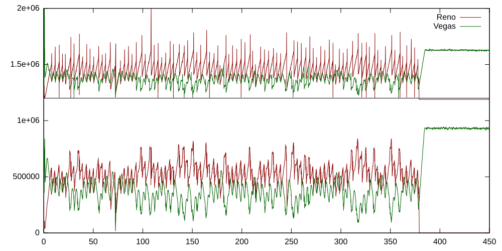
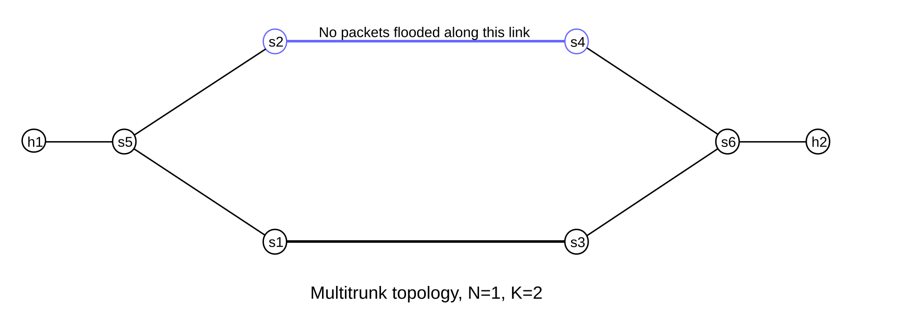

30 Mininet¶
Sometimes simulations are not possible or not practical, and network experiments must be run on actual machines. One can always use a set of interconnected virtual machines, but even pared-down virtual machines consume sufficient resources that it is hard to create a network of more than a handful of nodes. Mininet is a system that supports the creation of lightweight logical nodes that can be connected into networks. These nodes are sometimes called containers, or, more accurately, network namespaces. Virtual-machine technology is not used. These containers consume sufficiently few resources that networks of over a thousand nodes have been created, running on a single laptop. While Mininet was originally developed as a testbed for software-defined networking (3.4 Software-Defined Networking), it works just as well for demonstrations and experiments involving traditional networking.
A Mininet container is a process (or group of processes) that no longer has access to all the host system’s “native” network interfaces, much as a process that has executed the chroot() system call no longer has access to the full filesystem. Mininet containers then are assigned virtual Ethernet interfaces (see the ip-link man page entries for veth), which are connected to other containers through virtual Ethernet links. The use of veth links ensures that the virtual links behave like Ethernet, though it may be necessary to disable TSO (17.5 TCP Offloading) to view Ethernet packets in WireShark as they would appear on the (virtual) wire. Any process started within a Mininet container inherits the container’s view of network interfaces.
For efficiency, Mininet containers all share the same filesystem by default. This makes setup simple, but sometimes causes problems with applications that expect individualized configuration files in specified locations. Mininet containers can be configured so that each container has at least one private directory, eg for configuration files. See 30.6 Quagga Routing and BGP for an example, though mostly we avoid this feature.
Mininet is a form of network emulation, as opposed to simulation. An important advantage of emulation is that all network software, at any layer, is simply run “as is”. In a simulator environment, on the other hand, applications and protocol implementations need to be ported to run within the simulator before they can be used. A drawback of emulation is that as the network gets large and complex the emulation may slow down. In particular, it is not possible to emulate link speeds faster than the underlying hardware can support. (It is also not possible to emulate non-Linux network software.)
The Mininet group maintains extensive documentation; three useful starting places are the Overview, the Introduction and the FAQ.
The goal of this chapter is to present a series of Mininet examples. As of 2021, these have been upgraded to Python3, following the upgrade of Mininet itself, but Python2 distributions of Mininet (such as that on the Mininet VM, below) are still widespread. Each Mininet Python file configures the network and then starts up the Mininet command-line interface (which is necessary to start commands on the various node containers). The use of self-contained Python files arguably makes the configurations easier to edit, and avoids the complex command-line arguments of many standard Mininet examples. The Python code uses what the Mininet documentation calls the “mid-level” API.
The Mininet distribution comes with its own set of examples, in the directory of that name. A few of particular interest are listed below; with the exception of linuxrouter.py, the examples presented here do not use any of these techniques.
- bind.py: demonstrates how to give each Mininet node its own private directory (otherwise all nodes share a common filesystem)
- controllers.py: demonstrates how to arrange for multiple SDN controllers, with different switches connecting to different controllers
- limit.py: demonstrates how to set CPU utilization limits (and link bandwidths)
- linuxrouter.py: creates a node that acts as a router. Any host node can act as a router, though, provided we enable forwarding with
sysctl net.ipv4.ip_forward=1 - miniedit.py: a graphical editor for Mininet networks
- mobility.py: demonstrates how to move a host from one switch to another
- nat.py: demonstrates how to connect hosts to the Internet
- tree1024.py: creates a network with 1024 nodes
We will occasionally need supplemental programs as well, eg for sending, monitoring or receiving traffic. These are meant to be modified as necessary to meet circumstances; they contain few command-line option settings. These supplemental programs are also written in Python3.
30.1 Installing Mininet¶
Mininet runs only under the Linux operating system. Windows and Mac users can, however, easily run Mininet in a single Linux virtual machine. Even Linux users may wish to do this, as running Mininet has a nontrivial potential to affect normal operation (a virtual-switch process started by Mininet has, for example, interfered with the suspend feature on the author’s laptop).
The Mininet group maintains a virtual machine with a current Mininet installation (the “Mininet VM option”) at their downloads site. This Mininet VM option is Option 1 listed there. As of 2021, however, this version still used a 2014 version of Linux, and Python2. The download file is actually a .zip file, which unzips to a modest .ovf file defining the specifications of the virtual machine and a much larger (~2 GB) .vmdk file representing the virtual disk image. Even with the virtual disk fully utilized, the footprint is still just 4 GB.
There are several choices for virtual-machine software; two options that are well supported and free (as of 2017) for personal use are VirtualBox and VMware Workstation Player. Those using the Miniet VM option can open the .ovf file in either (in VirtualBox with the “import appliance” option). However, it may be easier simply to create a new Linux virtual machine and specify that it is to use an existing virtual disk; then select the downloaded .vmdk file as that disk.
Both the login name and the password for the Mininet VM option is “mininet”. Once logged in, the sudo command can be used to obtain root privileges, which are needed to run Mininet. It is in principle safest to do this on a command-by-command basis; eg sudo python switchline.py. It is also possible to keep a terminal window open that is permanently logged in as root, eg via sudo bash.
The preinstalled Mininet VM does not come with any graphical-interface desktop. A lightweight option, recommended by the Mininet site, is to install the alternative desktop environment lxde; it is half the size of Ubuntu. Install lxde with
apt-get install xinit lxde
The standard graphical text editor included with lxde is leafpad, though of course others (eg gedit or emacs) can be installed as well.
After desktop installation, the command startx may be necessary after login to start the graphical environment (though one can automate this).
30.1.1 Mininet and Python 3¶
A more up-to-date approach is to create a full Ubuntu virtual machine (Lubuntu is another, lighter, option), using a downloaded disk image from Ubuntu.com. This is Option 2 at http://mininet.org/download. To install Mininet on this virtual machine, one uses the install.sh script from the Mininet Github repository, which is cloned with
git clone https://github.com/mininet/mininet
See also the instructions at the downloads site above. This approach, like the Mininet VM option, includes the additional packages most commonly used with Mininet, such as openvswitch and Pox.
Note that some system defaults have changed since the 2014 Mininet VM. Explicitly setting the link speed and delay, and queue capacity for the bottleneck link, often improves consistency.
A standard recommendation for all new Debian-based Linux systems, before installing anything else, is
apt-get update
apt-get upgrade
Most virtual-machine software offers a special package to improve compatibility with the host system. One of the most annoying incompatibilities is the tendency of the virtual machine to grab the mouse and not allow it to be dragged outside the virtual-machine window. (Usually a special keypress releases the mouse; on VirtualBox it is by default the right-hand Control key and on VMWare Player it is Control-Alt.) Installation of the compatibility package (in VirtualBox called Guest Additions) usually requires mounting a CD image, with the command
mount /dev/cdrom /media/cdrom
The Mininet installation itself, whether from the Mininet VM or cloned from Github, can be upgraded as follows, assuming /home/mininet/mininet holds the cloned github files (from http://mininet.org/download):
cd /home/mininet/mininet
git fetch
git checkout master # Or a specific version like 2.2.1
git pull
util/install.sh # this script accepts some options
The simplest environment for beginners is to install a graphical desktop (eg lxde or full Ubuntu) and then work within it. This allows seamless opening of xterm and WireShark as necessary. Enabling copy/paste between the virtual system and the host is also convenient.
The xterm font size is quite small, but can be changed by clicking the right mouse button while holding down the control key. Pasting from the clipboard is done by clicking the middle mouse button. Text on the screen is copied automatically when it is selected, but it may only be copied to the xterm internal clipboard, not the system clipboard. This can be changed by selecting the “Select to Clipboard” option on the menu that should pop up with a control-click of the middle mouse button. There are keyboard alternatives available for those without a three-button mouse.
However, it is also possible to work entirely without the desktop, by using multiple ssh logins with X-windows forwarding enabled:
ssh -X -l username mininet
This does require an X-server on the host system, but these are available even for Windows (see, for example, Cygwin/X). At this point one can open a graphical program on the ssh command line, eg wireshark & or gedit mininet-demo.py &, and have the program window display properly (or close to properly).
Finally, it is possible to access the Mininet virtual machine solely via ssh terminal sessions, without X-windows, though one then cannot launch xterm or WireShark.
30.2 A Simple Mininet Example¶
Starting Mininet via the mn command (as root!), with no command-line arguments, creates a simple network of two hosts and one switch, h1–s1–h2, and starts up the Mininet command-line interface (CLI). By convention, Mininet host names begin with ‘h’ and switch names begin with ‘s’; numbering begins with 1.
At this point one can issue various Mininet-CLI commands. The command nodes, for example, yields the following output:
available nodes are:
c0 h1 h2 s1
The node c0 is the controller for the switch s1. The default controller action her makes s1 behave like an Ethernet learning switch (2.4.1 Ethernet Learning Algorithm). The command intfs lists the interfaces for each of the nodes, and links lists the connections, but the most useful command is net, which shows the nodes, the interfaces and the connections:
h1 h1-eth0:s1-eth1
h2 h2-eth0:s1-eth2
s1 lo: s1-eth1:h1-eth0 s1-eth2:h2-eth0
From the above, we can see that the network looks like this:
30.2.1 Running Commands on Nodes¶
The next step is to run commands on individual nodes. To do this, we use the Mininet CLI and prefix the command name with the node name:
h1 ifconfig
h1 ping h2
The first command here shows that h1 (or, more properly, h1-eth0) has IP address 10.0.0.1. Note that the name ‘h2’ in the second is recognized. The ifconfig command also shows the MAC address of h1-eth0, which may vary but might be something like 62:91:68:bf:97:a0. We will see in the following section how to get more human-readable MAC addresses.
There is a special Mininet command pingall that generates pings between each pair of hosts.
We can open a full shell window on node h1 using the Mininet command below; this works for both host nodes and switch nodes.
xterm h1
Note that the xterm runs with root privileges. From within the xterm, the command ping h2 now fails, as hostname h2 is not recognized. We can switch to ping 10.0.0.2, or else add entries to /etc/hosts for the IP addresses of h1 and h2:
10.0.0.1 h1
10.0.0.2 h2
As the Mininet system shares its filesystem with h1 and h2, this means that any /etc/host entries will be defined everywhere within Mininet (though be forewarned that when a different Mininet configuration assigns different addresses to h1 or h2, chaos will ensue).
In the examples below, we sometimes use hostnames such as h1, etc, assuming these /etc/hosts entries have been made.
From within the xterm on h1 we might try logging into h2 via ssh: ssh h2 (if h2 is defined in /etc/hosts as above). But the connection is refused: the ssh server is not running on node h2. We will return to this in the following example.
We can also start up WireShark, and have it listen on interface h1-eth0, and see the progress of our pings. To start WireShark on a host node, say h1, we can either enter h1 wireshark & at the mininet> prompt, or else launch WireShark from within an xterm window running on h1. With either approach, all the interfaces of h1 will be visible.
These methods also work for starting WireShark on a switch node. However, there is a simpler way, that takes advantage of the fact that, unlike for host interfaces, all switch interfaces are by default visible to the top-level Linux system; in the simple example above these are s1-eth1 and s1-eth2. So we can simply start WireShark at the top level, outside of Mininet (though the interfaces we are interested in won’t generally exist until after Mininet has started). In terms of the Mininet container model, switches do not by default get their own network namespace; they share the “root” namespace with the host. We can see this by running the following from the Mininet command line in the example above:
s1 ifconfig
and comparing the output with that of ifconfig run on the Mininet host, while Mininet is running but using a terminal not associated with the Mininet process itself. In the example above we see these interfaces:
eth0
lo
s1
s1-eth1
s1-eth2
We see the same interfaces on the controller node c0, even though the net and intfs commands above showed no interfaces for c0.
30.2.2 Mininet WireShark Demos¶
We can take advantage of this simple h1–s1–h2 configuration to observe traffic with WireShark on a nearly idle network; by default, the Mininet nodes are not connected to the outside world. After starting Mininet in one terminal window, we start WireShark in another and set it to listening to, say, s1-eth1.
To watch a TCP connection we then could start up xterm windows on h1 and h2. We run netcat -l 5432 on h2 and then netcat 10.0.0.2 5432 on h1. At this point we can see the ARP exchange followed by the TCP three-way handshake.
If we type a line of text to netcat on h1, we can watch the data packet and the returning ACK in WireShark. We can drill into the data packet to see the message contents. Typing cntl-D (or cntl-C) to netcat on h1 will result in the closing exchange of FIN packets.
Often there is no other traffic at all, though if we wait long enough we will see repeat ARP packets. Wireshark filtering is not generally needed (though in a busier environment we could filter all the non-TCP, non-port-5432 traffic with the WireShark filter option tcp.port == 5432).
30.3 Multiple Switches in a Line¶
The next example creates the topology below. All hosts are on the same subnet.
The Mininet-CLI command links can be used to determine which switch interface is connected to which neighboring switch interface.
The full Python3 program is switchline.py; to run it use
python3 switchline.py
This configures the network and starts the Mininet CLI. The default number of host/switch pairs is 4, but this can be changed with the -N command-line parameter, for example python3 switchline.py -N 5.
We next describe selected parts of switchline.py. The program starts by building the network topology object, LineTopo, extending the built-in Mininet class Topo, and then call Topo.addHost() to create the host nodes. (We here override __init()__, but overriding build() is actually more common.)
class LineTopo( Topo ):
def __init__( self , **kwargs):
"Create linear topology"
super(LineTopo, self).__init__(**kwargs)
h = [] # list of hosts; h[0] will be h1, etc
s = [] # list of switches
for key in kwargs:
if key == 'N': N=kwargs[key]
# add N hosts h1..hN
for i in range(1,N+1):
h.append(self.addHost('h' + str(i)))
Method Topo.addHost() takes a string, such as “h2”, and builds a host object of that name. We immediately append the new host object to the list h[]. Next we do the same to switches, using Topo.addSwitch():
# add N switches s1..sN
for i in range(1,N+1):
s.append(self.addSwitch('s' + str(i)))
Now we build the links, with Topo.addLink. Note that h[0]..h[N-1] represent h1..hN. First we build the host-switch links, and then the switch-switch links.
for i in range(N): # Add links from hi to si
self.addLink(h[i], s[i])
for i in range(N-1): # link switches
self.addLink(s[i],s[i+1])
Now we get to the main program. We use argparse to support the -N command-line argument.
def main(**kwargs):
parser = argparse.ArgumentParser()
parser.add_argument('-N', '--N', type=int)
args = parser.parse_args()
if args.N is None:
N = 4
else:
N = args.N
Next we create a LineTopo object, defined above. We also set the log-level to ‘info’; if we were having problems we would set it to ‘debug’.
ltopo = LineTopo(N=N)
setLogLevel('info')
Finally we’re ready to create the Mininet net object, and start it. We’ve specified the type of switch here, though at this point that does not really matter. It does matter that we’re using the DefaultController, as otherwise the switches will not behave automatically as Ethernet learning switches. The autoSetMacs option sets the host MAC addresses to 00:00:00:00:00:01 through 00:00:00:00:00:04 (for N=4), which can be a great convenience when manually examining Ethernet addresses.
net = Mininet(topo = ltopo, switch = OVSKernelSwitch,
controller = DefaultController,
autoSetMacs = True
)
net.start()
Finally we start the Mininet CLI, and, when that exits, we stop the emulation.
CLI( net)
net.stop()
30.3.1 Configuring SSH¶
In the multiple-switch example above, if we want to run sshd on the Mininet nodes, the fragment below starts the daemon /usr/sbin/sshd on each node. This command automatically puts itself in the background; otherwise we would need to add an ‘&’ to the string to run the command in the background.
for i in range(1, N+1):
hi = net['h' + str(i)]
hi.cmd('/usr/sbin/sshd')
Using sshd requires a small bit of configuration, if ssh for the root user has not been set up already. We must first, as root, run ssh-keygen, or, better yet, ssh-keygen -t ed25519 which creates the directory /root/.ssh and then the public and private key files. For RSA keys (the default), these files are id_rsa.pub and id_rsa respectively; with the ed25519 option, they are id_ed25519.pub and id_ed25519. An advantage to the elliptic-curve keys (ed25519) is that the public key is much shorter, and typically fits on a single line in a terminal window. Unless the virtual machine is being used for other connections, there should be no need to protect the keys with a password.
To enable passwordless login, the second step is to go to the .ssh directory and copy id_rsa.pub (or id_ed25519.pub) to the (new) file authorized_keys (if the latter file already exists, append id_rsa.pub to it).
The ssh command can be finicky. The .ssh directory must not allow any access to other than the owner; that is, the permissions must be rwx------. The authorized_keys file must not be writeable except by the owner. Finally, some Linux distributions may “lock” the root account; it can be unlocked by giving the root account a password, or by editing the file /etc/shadow and changing the hashed-password field from ‘!’ to ‘*’.
Because we started sshd on each host, the command ssh 10.0.0.4 on h1 should successfully connect to h4. The first time a connection is made from h1 to h4 (as root), ssh will ask for confirmation, and then store h4’s key in /root/.ssh/known_hosts. As this is the same file for all Mininet nodes, due to the common filesystem, a subsequent request to connect from h2 to h4 will succeed immediately; h4 has already been authenticated for all nodes.
Finally, we note that to have ssh return immediately after starting a persistent process on a remote host, we need something like this, where foo.sh is the command in question:
ssh hostname 'nohup foo.sh >/dev/null 2>&1 &'
30.3.2 Running a webserver¶
Now let’s run a web server on, say, host 10.0.0.4 of the switchline.py example above. Python includes a simple implementation that serves up the files in the directory in which it is started. After switchline.py is running, start an xterm on host h4, and then change directory to /usr/share/doc (where there are some html files). Then run the following command (the 8000 is the server port number):
python -m SimpleHTTPServer 8000
If this is run in the background somewhere, output should be redirected to /dev/null or else the server will eventually hang.
The next step is to start a browser. If a full desktop environment has been installed (eg lxde, 30.1 Installing Mininet), then a full browser should be available (lxde comes with chromium-browser). Start an xterm on host h1, and on h1 run the following (the --no-sandbox option is necessary to run chromium as root):
chromium-browser --no-sandbox
Assuming chromium opens successfully, enter the following URL: 10.0.0.4:8000. If chromium does not start, try wget 10.0.0.4:8000, which stores what it receives as the file index.html. Either way, you should see a listing of the /usr/share/doc directory. It is possible to browse subdirectories, but only browser-recognized filetypes (eg .html) will open directly. A few directories with subdirectories named html are iperf, iptables and xarchiver; try navigating to these.
30.4 IP Routers in a Line¶
In the next example we build a Mininet example involving a router rather than a switch. A router here is simply a multi-interface Mininet host that has IP forwarding enabled in its Linux kernel. Mininet support for multi-interface hosts is somewhat fragile; interfaces may need to be initialized in a specific order, and IP addresses often cannot be assigned at the point when the link is created. In the code presented below we assign IP addresses using calls to Node.cmd() used to invoke the Linux command ifconfig (Mininet containers do not fully support the use of the alternative ip addr command).
Our first router topology has only two hosts, one at each end, and N routers in between; below is the diagram with N=3. All subnets are /24. The program to set this up is routerline.py, here invoked as python routerline.py -N 3. We will use N=3 in most of the examples below. A somewhat simpler version of the program, which sets up the topology specifically for N=3, is routerline3.py.
In both versions of the program, routing entries are created to route traffic from h1 to h2, but not back again. That is, every router has a route to 10.0.3.0/24, but only r1 knows how to reach 10.0.0.0/24 (to which r1 is directly connected). We can verify the “one-way” connectedness by running WireShark or tcpdump on h2 (perhaps first starting an xterm on h2), and then running ping 10.0.3.10 on h1 (perhaps using the Mininet command h1 ping h2). WireShark or tcpdump should show the arriving ICMP ping packets from h1, and also the arriving ICMP Destination Network Unreachable packets from r3 as h2 tries to reply (see 10.4 Internet Control Message Protocol).
It turns out that one-way routing is considered to be suspicious; one interpretation is that the packets involved have a source address that shouldn’t be possible, perhaps spoofed. Linux provides the interface configuration option rp_filter – reverse-path filter – to block the forwarding of packets for which the router does not have a route back to the packet’s source. This must be disabled for the one-way example to work; see the notes on the code below, and also 13.6.1 Reverse-Path Filtering.
Despite the lack of connectivity, we can reach h2 from h1 via a hop-by-hop sequence of ssh connections (the program enables sshd on each host and router):
h1: slogin 10.0.0.2
r1: slogin 10.0.1.2
r2: slogin 10.0.2.2
r3: slogin 10.0.3.10 (that is, h3)
To get the one-way routing to work from h1 to h2, we needed to tell r1 and r2 how to reach destination 10.0.3.0/24. This can be done with the following commands (which are executed automatically if we set ENABLE_LEFT_TO_RIGHT_ROUTING = True in the program):
r1: ip route add to 10.0.3.0/24 via 10.0.1.2
r2: ip route add to 10.0.3.0/24 via 10.0.2.2
To get full, bidirectional connectivity, we can create the following routes to 10.0.0.0/24:
r2: ip route add to 10.0.0.0/24 via 10.0.1.1
r3: ip route add to 10.0.0.0/24 via 10.0.2.1
When building the network topology, the single-interface hosts can have all their attributes set at once (the code below is from routerline3.py:
h1 = self.addHost( 'h1', ip='10.0.0.10/24', defaultRoute='via 10.0.0.2' )
h2 = self.addHost( 'h2', ip='10.0.3.10/24', defaultRoute='via 10.0.3.1' )
The routers are also created with addHost(), but with separate steps:
r1 = self.addHost( 'r1' )
r2 = self.addHost( 'r2' )
...
self.addLink( h1, r1, intfName1 = 'h1-eth0', intfName2 = 'r1-eth0')
self.addLink( r1, r2, inftname1 = 'r1-eth1', inftname2 = 'r2-eth0')
Later on the routers get their IPv4 addresses:
r1 = net['r1']
r1.cmd('ifconfig r1-eth0 10.0.0.2/24')
r1.cmd('ifconfig r1-eth1 10.0.1.1/24')
r1.cmd('sysctl net.ipv4.ip_forward=1')
rp_disable(r1)
The sysctl command here enables forwarding in r1. The rp_disable(r1) call disables Linux’s default refusal to forward packets if the router does not have a route back to the packet’s source; this is often what is wanted in the real world but not necessarily in routing demonstrations. It too is ultimately implemented via sysctl commands.
30.5 IP Routers With Simple Distance-Vector Implementation¶
The next step is to automate the discovery of the route from h1 to h2 (and back) by using a simple distance-vector routing-update protocol. We present a partial implementation of the Routing Information Protocol, RIP, as defined in RFC 2453. Alternatively, one can use the (full) RIP implementation that is part of Quagga, 30.6 Quagga Routing and BGP.
The distance-vector algorithm is described in 13.1 Distance-Vector Routing-Update Algorithm. In brief, the idea is to add a cost attribute to the forwarding table, so entries have the form ⟨destination,next_hop,cost⟩. Routers then send ⟨destination,cost⟩ lists to their neighbors; these lists are referred to the RIP specification as update messages. Routers receiving these messages then process them to figure out the lowest-cost route to each destination. The format of the update messages is diagrammed below:
The full RIP specification also includes request messages, but the implementation here omits these. The full specification also includes split horizon, poison reverse and triggered updates (13.2.1.1 Split Horizon and 13.2.1.2 Triggered Updates); we omit these as well. Finally, while we include code for the third next_hop increase case of 13.1.1 Distance-Vector Update Rules, we do not include any test for whether a link is down, so this case is never triggered.
The implementation is in the Python3 file rip.py. Most of the time, the program is waiting to read update messages from other routers. Every UPDATE_INTERVAL seconds the program sends out its own update messages. All communication is via UDP packets sent using IP multicast, to the official RIP multicast address 224.0.0.9. Port 520 is used for both sending and receiving.
Rather than creating separate threads for receiving and sending, we configure a short (1 second) recv() timeout, and then after each timeout we check whether it is time to send the next update. An update can be up to 1 second late with this approach, but this does not matter.
The program maintains a “shadow” copy RTable of the real system forwarding table, with an added cost column. The real table is updated whenever a route in the shadow table changes. In the program, RTable is a dictionary mapping TableKey values (consisting of the IP address and mask) to TableValue objects containing the interface name, the cost, and the next_hop.
To run the program, a “production” approach would be to use Mininet’s Node.cmd() to start up rip.py on each router, eg via r.cmd('python3 rip.py &') (assuming the file rip.py is located in the same directory in which Mininet was started). For demonstrations, the program output can be observed if the program is started in an xterm on each router.
30.5.1 Multicast Programming¶
Sending IP multicast involves special considerations that do not arise with TCP or UDP connections. The first issue is that we are sending to a multicast group – 224.0.0.9 – but don’t have any multicast routes (multicast trees, 25.5 Global IP Multicast) configured. What we would like is to have, at each router, traffic to 224.0.0.9 forwarded to each of its neighboring routers.
However, we do not actually want to configure multicast routes; all we want is to reach the immediate neighbors. Setting up a multicast tree presumes we know something about the network topology, and, at the point where RIP comes into play, we do not. The multicast packets we send should in fact not be forwarded by the neighbors (we will enforce this below by setting TTL); the multicast model here is very local. Even if we did want to configure multicast routes, Linux does not provide a standard utility for manual multicast-routing configuration; see the ip-mroute.8 man page.
So what we do instead is to create a socket for each separate router interface, and configure the socket so that it forwards its traffic only out its associated interface. This introduces a complication: we need to get the list of all interfaces, and then, for each interface, get its associated IPv4 addresses with netmasks. (To simplify life a little, we will assume that each interface has only a single IPv4 address.) The function getifaddrdict() returns a dictionary with interface names (strings) as keys and pairs (ipaddr,netmask) as values. If ifaddrs is this dictionary, for example, then ifaddrs['r1-eth0'] might be ('10.0.0.2','255.255.255.0'). We could implement getifaddrdict() straightforwardly using the Python module netifaces, though for demonstration purposes we do it here via low-level system calls.
We get the list of interfaces using myInterfaces = os.listdir('/sys/class/net/'). For each interface, we then get its IP address and netmask (in get_ip_info(intf)) with the following:
s = socket.socket(socket.AF_INET, socket.SOCK_DGRAM)
SIOCGIFADDR = 0x8915 # from /usr/include/linux/sockios.h
SIOCGIFNETMASK = 0x891b
intfpack = struct.pack('256s', bytes(intf, 'ascii'))
# ifreq, below, is like struct ifreq in /usr/include/linux/if.h
ifreq = fcntl.ioctl(s.fileno(), SIOCGIFADDR, intfpack)
ipaddrn = ifreq[20:24] # 20 is the offset of the IP addr in ifreq
ipaddr = socket.inet_ntoa(ipaddrn)
netmaskn = fcntl.ioctl(s.fileno(), SIOCGIFNETMASK, intfpack)[20:24]
netmask = socket.inet_ntoa(netmaskn)
return (ipaddr, netmask)
We need to create the socket here (never connected) in order to call ioctl(). The SIOCGIFADDR and SIOCGIFNETMASK values come from the C language include file; the Python3 libraries do not make these constants available but the Python3 fcntl.ioctl() call does pass the values we provide directly to the underlying C ioctl() call. This call returns its result in a C struct ifreq; the ifreq above is a Python version of this. The binary-format IPv4 address (or netmask) is at offset 20.
30.5.1.1 createMcastSockets()¶
We are now in a position, for each interface, to create a UDP socket to be used to send and receive on that interface. Much of the information here comes from the Linux socket.7 and ip.7 man pages. The function createMcastSockets(ifaddrs) takes the dictionary above mapping interface names to (ipaddr,netmask) pairs and, for each interface intf, configures it as follows. The list of all the newly configured sockets is then returned.
The first step is to obtain the interface’s address and mask, and then convert these to 32-bit integer format as ipaddrn and netmaskn. We then enter the subnet corresponding to the interface into the shadow routing table RTable with a cost of 1 (and with a next_hop of None), via
RTable[TableKey(subnetn, netmaskn)] = TableValue(intf, None, 1)
Next we create the socket and begin configuring it, first by setting its read timeout to a short value. We then set the TTL value used by outbound packets to 1. This goes in the IPv4 header Time To Live field (9.1 The IPv4 Header); this means that no downstream routers will ever forward the packet. This is exactly what we want; RIP uses multicast only to send to immediate neighbors.
sock.setsockopt(socket.IPPROTO_IP, socket.IP_MULTICAST_TTL, 1)
We also want to be able to bind the same socket source address, 224.0.0.9 and port 520, to all the sockets we are creating here (the actual bind() call is below):
sock.setsockopt(socket.SOL_SOCKET, socket.SO_REUSEADDR, 1)
The next call makes the socket receive only packets arriving on the specified interface:
sock.setsockopt(socket.SOL_SOCKET, socket.SO_BINDTODEVICE, bytes(intf, 'ascii'))
We add the following to prevent packets sent on the interface from being delivered back to the sender; otherwise multicast delivery may do just that:
sock.setsockopt(socket.IPPROTO_IP, socket.IP_MULTICAST_LOOP, False)
The next call makes the socket send on the specified interface. Multicast packets do have IPv4 destination addresses, and normally the kernel chooses the sending interface based on the IP forwarding table. This call overrides that, in effect telling the kernel how to route packets sent via this socket. (The kernel may also be able to figure out how to route the packet from the subsequent call joining the socket to the multicast group.)
sock.setsockopt(socket.IPPROTO_IP, socket.IP_MULTICAST_IF, socket.inet_aton(ipaddr))
Finally we can join the socket to the multicast group represented by 224.0.0.9. We also need the interface’s IP address, ipaddr.
addrpair = socket.inet_aton('224.0.0.9')+ socket.inet_aton(ipaddr)
sock.setsockopt(socket.IPPROTO_IP, socket.IP_ADD_MEMBERSHIP, addrpair)
The last step is to bind the socket to the desired address and port, with sock.bind(('224.0.0.9', 520)). This specifies the source address of outbound packets; it would fail (given that we are using the same socket address for multiple interfaces) without the SO_REUSEADDR configuration above.
30.5.2 The RIP Main Loop¶
The rest of the implementation is relatively nontechnical. One nicety is the use of select() to wait for arriving packets on any of the sockets created by createMcastSockets() above; the alternatives might be to poll each socket in turn with a short read timeout or else to create a separate thread for each socket. The select() call takes the list of sockets (and a timeout value) and returns a sublist consisting of those sockets that have data ready to read. Almost always, this will be just one of the sockets. We then read the data with s.recvfrom(), recording the source address src which will be used when we, next, call update_tables(). When a socket closes, it must be removed from the select() list, but the sockets here do not close; for more on this, see 30.7.3.2 dualreceive.py.
The update_tables() function takes the incoming message (parsed into a list of RipEntry objects via parse_msg()) and the IP address from which it arrives, and runs the distance-vector algorithm of 13.1.1 Distance-Vector Update Rules. TK is the TableKey object representing the new destination (as an (addr,netmask) pair). The new destination rule from 13.1.1 Distance-Vector Update Rules is applied when TK is not present in the existing RTable. The lower cost rule is applied when newcost < currentcost, and the third next_hop increase rule is applied when newcost > currentcost but currentnexthop == update_sender.
30.6 Quagga Routing and BGP¶
The Quagga package is a fully functional router package that supports RIP, OSPF, and BGP. We give a simple example here involving BGP. Quagga is a replacement for an earlier package known as “zebra” (the Quagga package is named for a now-extinct subspecies of the zebra).
Our goal is to create a network of routers and have them learn the global routing map using BGP. We will give an example here using a linear series of routers; here is the layout for N=3 routers:
To do this we set up the appropriate configuration files for the Quagga daemons (in our case, zebra and bgpd), and then run those daemons on each BGP node. The main Mininet Python3 file is bgpanycast.py, with some helper functions in bgphelpers.py.
Our setup requires two configuration files for each host: zebra.conf for general information and bgpd.conf for (mostly) BGP-specific information. Although Mininet does support having each node have its own private copy of one directory (for the configuration files), we take the approach here of supplying the config-file names on the command line of each quagga daemon; this way, each node gets its own configuration file in a unique location.
Because these configuration files, particularly bgpd.conf, are tedious and error-prone to create, so we introduce Python code to generate them automatically. These automatically generated files can be preserved, hand-edited and reused, if desired, by appropriately adjusting the code. The existing code deletes the files on exit. Hand-editing will be necessary if, for example, BGP routing and filtering policies (15.4 BGP Filtering and Routing Policies) are to be applied.
Each configuration file is created in a subdirectory named for the router in question, prefixed by the path to the directory in which Mininet is started. The directories are created if they do not already exist, and are set to allow wrting by anyone (as the log files created need to be writable by processes without root privileges). The specification of the appropriate log file will be via an absolute path name ending in the appropriate directory.
Creating the configuration files will involve extracting a little more topology information from the Mininet network than we have done previously. Given a Mininet node object representing a router, say r, we can find its interfaces in Python with r.intfList(). Given an interface intf, we can find the node it is attached to with intf.node, and the link to which it connects with intf.link. Finally, given a link lnk we can find the two interfaces it connects with lnk.intf1 and lnk.intf2. This is sufficient for our needs here.
The first configuration file is for quagga itself, called zebra.conf . The zebra.conf file needs to know the router’s name, some passwords, the log file, and the interfaces that participate in the routing. Here, for example, is the zebra.conf file for router r2 in the figure below; configuration-specific parameters are in bold:
! zebra configuration file! This file is automatically generatedhostname r2password zpasswordenable password epasswordlog file /home/mininet/loyola/bgp/r2/zebra.loginterface r2-eth1multicastinterface r2-eth2multicast
In creating the zebra.conf file, the most interesting step is the listing of the interfaces that connect to other BGP routers. To do this, we first create a a dictionary of neighbors, ndict. For a BGP router r, with interface r-eth (both as string names, not as Mininet objects), the value of ndict[ (r,r-eth) ] is the BGP router (again, as a string) directly connected to r via the link connected to the r-eth interface. If the neighbor of r connected via r-eth is an ordinary host or non-BGP router, no entry in ndict is created. To build ndict, we start with a list of all designated BGP routers (BGPnodelist in the code), as Mininet objects. Given a node n in this list, we first find all of n’s interfaces (n.intfList()). For each interface we find the link it connects to (intf.link), and then the two endpoint nodes of that link (link.intf1.node and link.intf2.node). One of these endpoint nodes is r, of course, and the other is the neighbor node we are looking for.
The second configuration file is bgpd.conf. This is where all the BGP route preferences can be expressed, though for this demonstration we include none of that. Here is the file for, again, r2:
! bgpd configuration file for router r2! This file is automatically generatedhostname r2password zpasswordenable password epasswordlog file /home/mininet/loyola/bgp/r2/bgpd.logrouter bgp 2000bgp router-id 10.0.20.1! These are the networks we announce; configured here to be ALL directly connected networksnetwork 10.0.20.0/24network 10.0.1.0/24network 10.0.2.0/24!These are the neighbors with which we estabish BGP sessions:neighbor 10.0.1.1 remote-as 1000neighbor 10.0.2.2 remote-as 3000
There is quite a bit more information we must extract about the network topology. The first item is the Autonomous System (AS) number assigned to the router, 2000 above. These are arbitrary; we create ASdict as a map of BGP-router string names to numbers. For simplicity, the AS number of the nth router is set to 1000*n.
The next item is the BGP “router-id” value. This is chosen as the largest (in alphabetical sorted order) of the router’s IPv4 addresses.
We will have each router announce every directly connected network. To do this we create addrdict, a dictionary mapping (router,interface) pairs to the IPv4 address (and prefix length) assigned to that interface. The dictionary includes only routers that are BGP routers, but (unlike ifdict above) includes every interface. As with ndict above, for simplicity all entries in this dictionary are strings rather than Mininet objects.
Finding the IPv4 address assigned to the Mininet interfaces involves a slight complication, as we have had to set these previously with explicit calls to ifconfig, eg with
r.cmd('ifconfig r-eth1 10.0.10.1/24')
We need to query the relevant node and interface and find the IPv4 address attached to it. To do this, we take advantage of the fact that the Mininet Node.cmd() method returns, as a Python string, the output of the command that was run. The function ipv4addr(node, intf) runs the command ip addr list dev {intf} on the node; this command is widely used to view interface IP addresses. The command output is stored in string s; this string is then parsed to find the IPv4 address assignment. This technique allows for any Mininet node properties to be queried by the Mininet run() command.
Creation of the network lines in the configuration file, one per interface, is now straightforward.
The final step is the neighbor lines. Here we need to figure out the neighbor BGP routers, and, for each, find its AS-number and an IP address that we can use to connect to it from the original router. There is an issue here: because BGP is the routing algorithm, we cannot rely on any pre-existing routing information to route from one BGP router to its neighbors. In practice, this means that the BGP neighbors must be directly connected; in the real world, the route between two BGP speakers is typically known to both sides’ interior routing protocol. For our example here, given one router, say r1, and BGP neighbor r2, we must find the IP address of r2 that is assigned to the r2-end of the link connecting r1 and r2. This is straightforward, though, with the two dictionaries above ndict and addrdict.
At this point we can fire up Mininet and, after a short while, confirm that we can ping from h1 to h3, etc, confirming that routing is working.
30.6.1 The Anycast Part¶
We now try something more specific to BGP: anycast routing (15.8 BGP and Anycast). We give host h4 the same IPv4 address as h0, namely 10.0.0.1 (the righthand interface of the rightmost BGP router must also have an IPv4 address on the same subnet, eg 10.0.0.2). BGP starts up without errors, and we can now ping 10.0.0.1 from any of h1-hN. But it is not always the same 10.0.0.1.
Setting N=5 in the bgpanycast.py file, we can use traceroute to see the path to 10.0.0.1. If we run ping 10.0.0.1 from h3, we get the following:
traceroute to 10.0.0.1 (10.0.0.1), 30 hops max, 60 byte packets
1 10.0.30.1 (10.0.30.1) 0.095 ms 0.023 ms 0.020 ms ;; 10.0.30.1 is r3
2 10.0.2.1 (10.0.2.1) 0.044 ms 0.031 ms 0.027 ms ;; 10.0.2.1 is r2
3 10.0.1.1 (10.0.1.1) 0.049 ms 0.038 ms 0.036 ms ;; 10.0.1.1 is r1
4 10.0.0.1 (10.0.0.1) 0.058 ms 0.046 ms 0.047 ms
If we try from h4, however, we (probably) go the other way (the exact dividing point may vary between runs):
traceroute to 10.0.0.1 (10.0.0.1), 30 hops max, 60 byte packets
1 10.0.40.1 (10.0.40.1) 0.084 ms 0.024 ms 0.019 ms ;; 10.0.40.1 is r4
2 10.0.4.2 (10.0.4.2) 0.043 ms 0.030 ms 0.079 ms ;; 10.0.4.2 is r5
3 10.0.0.1 (10.0.0.1) 0.060 ms 0.040 ms 0.036 ms
There is no conflict due to h0 and the rightmost h having the same IPv4 address. The entire network has been partitioned, by BGP, into a portion that believes 10.0.0.1 is to the left, and a disjoint portion that believes 10.0.0.1 is to the right. We can attach servers to each of the 10.0.0.1 and have everyone else reach this destination via whichever route is “better”.
30.6.2 Logging in to the routers¶
We can also adjust the configurations on the fly, by using the routers’ command-line interface. This is what the two passwords in the configuration files are for; the first password grants read-only access, and the second allows changes.
The Quagga command-line interface is quite similar to that used on Cisco routers (and switches), and offers an excellent opportunity to gain familiarity with the Cisco command-line interface for those without ready access to Cisco hardware.
The command-line interface has four privilege levels:
- user level; typical prompt is r2>
- privileged command level; typical prompt is r2#
- global configuration level; typical prompt is r2(config)#
- specific configuration level; typical prompt might be r2(config-router)
To log in to a BGP router, open an xterm window on that node and use the command telnet localhost bgpd (the “bgpd” here represents the TCP port, 2605; the numeric form can also be used). The password requested is “zpassword”, the first of the two configuration-file passwords.
At this point, you are at the lowest privilege level. Typically, all available commands are read-only; a list of commands can be obtained from the list command. One useful command is show bgp summary.
To get to the next privilege level, type enable, which will ask for the “enable” password as specified in the configuration file. The example here uses “epassword”. At this level, one command to try is show running-config, which should display bgpd.conf.
The next two privilege levels have no separate passwords. Entering configure terminal enters the configuration level. The final step is to specify just what is to be configured, eg with router bgp 2000 (where 2000 is the AS number).
At this final privilege level, commands – including configuration-file commands – can be entered. For example, we can advertise a new network with the following, just as if it had been entered in bgpd.conf:
network 10.0.50.0/24
If the router running this command does not have a direct connection to the specified network, this amounts to BGP hijacking (sidebar at 15.4 BGP Filtering and Routing Policies). If we set the number of BGP routers to be N=5, for example, set up a connection from h3 to h5, and then run the above on r2, the connection will be broken. Router r2 has in effect told r3 that it is the way to reach the destination, but once the traffic arrives at r2 it is simply undeliverable. The traceroute command on h3 can be used to verify that traffic from h3 to 10.0.50.10 now goes to r2, where it dies. Proper traffic flow can be restored with the command no network 10.0.50.0/24 on r2.
30.7 TCP Competition¶
The next routing example uses the following topology in order to emulate competition between two TCP connections h1→h3 and h2→h3. We introduce Mininet features to set, on the links, an emulated bandwidth and delay, and to set on the router an emulated queue size. Our first application will be to arrange a competition between TCP Reno (19 TCP Reno and Congestion Management) and TCP Vegas (22.6 TCP Vegas). The Python3 file for running this Mininet configuration is competition.py.
We want the r–h3 link to be the bottleneck, making this an instance of the singlebell topology (20.2.3 Example 3: competition and queue utilization). To do this, we need to be able to control the bandwidth, delay and queue size on the r–h3 link. (While this topology is fairly standard for TCP competitions, we really only need the separate sender h2 if the h1--r and h2--r links have different propagation delays, or differ in some other attribute. Otherwise we can run both TCPs from h1 to h3, which simplifies some of the configuration discussed below.)
The bottleneck bandwidth shown of 1 KB/ms is not particularly high, but can be adjusted. The bandwidth×delay product in the network shown is thus around 220 KB.
We might be interested in TCP competition to determine which TCP is “best”. Alternatively, we might be interested in order to verify that a new TCP is “Reno-fair”, in the sense of 21.3 TCP Friendliness. Or we might be interested in TCP competition in the context of the TCP high-bandwidth problem (21.6 The High-Bandwidth TCP Problem); the goal might be to show that a proposed new TCP competes fairly with respect to Reno at lower bandwidths, or that it performs well – if “unfairly” with respect to Reno – at higher bandwidths. See 22.2 High-Bandwidth Desiderata. Finally, we might be interested in comparing two TCP connections with different RTTs, or different starting times.
We might also be interested in comparing two TCPs in the context of a specific traffic environment, or packet-loss environment. The experiments below involve two senders and a small amount of randomizing traffic (30.7.3.3 udprandomtelnet.py), but we might also be interested in competition in an environment in which a large number of pre-existing connections shares the link.
Measuring relative TCP performance is fraught with potential misinterpretation. Perhaps the most important question is how long the competition is to run. While there is a place for short-term competitions, long-term performance is usually the more interesting case. TCP Reno, for example, adjusts its cwnd through a sequence of “teeth” (19.1.1 The Somewhat-Steady State), so any long-term competition should run for, at a minimum, many teeth. But how many is enough? A general answer is that the competition should be long enough to yield reasonably consistent results; sometimes that is much longer than naively expected. The Reno tooth size can be estimated from the bottleneck queue capacity plus the transit capacity (or bandwidth×delay product); nominally, if those two quantities sum to M, then cwnd will range between M/2 and M, and the length of a tooth will be M/2 RTTs (see 19.7 TCP and Bottleneck Link Utilization and 21.2 TCP Reno loss rate versus cwnd). If M=1200 and RTT = 100ms, then M/2 RTTs is 60 seconds.
This in turn raises the question of what value we should use for the capacity of the bottleneck-link queue. The classic answer for TCP Reno is to have the bottleneck queue capacity at least as large as the transit capacity, as this ensures that, in the absence of competition, a single connection receives 100% of the bottleneck bandwidth (19.7 TCP and Bottleneck Link Utilization). But having only one connection through a non-leaf link is an unusual situation, and in any event large queues tend to aggravate the bufferbloat problem (21.5.1 Bufferbloat). The queue capacity will be particularly important when comparing Reno and Vegas (22.6.1 TCP Vegas versus TCP Reno), as theory predicts that TCP Vegas should do best with small queues.
All these variables should be kept at least somewhat in mind in the sequel, which primarily addresses the mechanics of setting up and measuring TCP competitions.
30.7.1 Emulating Bandwidth, Delay and Queue¶
Consider the following diagram, in which we want R to have a FIFO queue (first-in, first out; that is, a traditional queue) with maximum capacity of 100, and the R–B link to have a bandwidth of 1 byte/microsecond (8 Mbps), and to introduce a one-way R->B delay of 100 ms.
Conceptually, here is what happens to packets arriving at R from A:
- They are dropped if R’s FIFO queue is full
- Packets that are not dropped wait in R’s FIFO queue for R to send the earlier packets at the 1 byte/µsec rate
- Once packets are sent by R, they wait the 100 ms propagation delay before arriving at B, where they are immediately accepted for processing.
To emulate this successfully, we need to apply these three limits – FIFO queue, bandwidth and delay. The order here matters; generally, the FIFO queue must immediately precede the bandwidth throttler. Each of these is implemented as an appropriate Linux queuing discipline in the sense of 23.4 Queuing Disciplines. These queuing disciplines would generally all be attached to R’s interface that faces B, not B’s interface facing R.
Formally, an emulation mechanism is equivalent to the physical configuration above if for any arbitrary sequence of packets ⟨Pi|i<N⟩, where Pi has size Si and is sent by A at time Ti, we get the same packet arrival times at B, and the same packet losses, as we would in the physical configuration. While we will avoid here formal equivalence proofs, the idea is that equivalence will occur if the same rules are applied in the same order.
Linux has long had queuing disciplines for implementing bandwidth throttling; see, for example, HTB (24.11 Linux HTB). HTB supports multiple traffic classes; there is also the simpler Token Bucket Filter, TBF, that applies bandwidth throttling to all traffic uniformly. Linux also has the NetEm (Network Emulator) queuing discipline, which supports delays and traditional FIFO queues, and which also offers its own mechanism for bandwidth throttling. (NetEm also supports several random-loss models, packet duplication, corruption reordering and variable delay (jitter). We will not use these features here.)
There are some subtle niceties with these traffic emulators, particularly when it comes to bandwidth throttling. Neither HTB nor TBF was quite meant to emulate the physical bandwidth of a single link, for which token buckets (24 Token Bucket Rate Limiting) do not generally apply. A token-bucket filter will, if the line has been idle, allow a “bucketful” of packets to be sent all at once. We will get around this when using HTB or TBF by choosing small bucket sizes (“burst” sizes in HTB/TBF parlance).
We cannot choose the burst size too small, however, or we run into another issue. Linux systems have a specific interrupt frequency, denoted as HZ, representing the number of interrupts per second, and HTB, TBF and NetEm wake up and process packets once per interrupt. On the author’s 2021 laptop, for example, HZ=250, meaning that interrupts occur every 4 ms (traditionally, HZ was 100; on some systems it can be 1,000). On each interrupt, these queuing disciplines wake up and send a batch of packets; specifically, the number of packets that need to be sent in the next 1/HZ time interval in order to maintain the desired bandwidth. HTB and TBF support a user-provided burst parameter, and if this designated burst size is smaller than the packet-batch size, the full cluster cannot be sent and bandwidth falls short. For HZ=250 and packets of 1500 bytes, one packet per CPU interrupt yields a bandwidth of 250 packets/sec, or 3 Mbps. To send at 8 Mbps, we thus need the burst parameter to be at least 3×1500 = 4500 bytes. In general, to send at rate r bits/sec, we need a burst size of r/(12000×HZ), rounded up to a multiple of 1500 bytes (there are 12000 bits in 1500 bytes). An advantage of using NetEm here is that it calculates all this for us, though NetEm still has the HZ-granularity issue.
One consequence of the use of token buckets for bandwidth throttling is that, because the bucket size is usually at least as large as one packet, single packets may not be delayed at all. For example, if we increase the size of ping packets with the -s option, we may find that the RTT reported by the ping command is unchanged: the individual ping packets are not being delayed at all by the token-bucket filter.
Mininet uses HTB by default for specifying link rate limits, with NetEm used for delay and the FIFO queue. For convenience, we will often go along with the Mininet default. For critical links, though, having NetEm handle all three means we avoid having to deal with putting things in the right order. In the file competition.py, we use NetEm alone on the bottleneck link r–h3.
To specify for NetEm a rate of 8 Mbps, a delay of 110 ms, and a FIFO-queue size of 25, we can use the following:
netem rate 8mbit delay 110ms limit 25
To add this to interface r-eth3, we need to preface it with tc qdisc add root dev r-eth3.
30.7.2 Link Emulation in Mininet¶
To create links in Mininet with bandwidth/delay support, we can simply set Link=TCLink in the Mininet() call in main(). The TCLink class represents a Traffic Controlled Link. Next, in the topology section calls to addLink(), we add keyword parameters such as bw=BottleneckBW (where BottleneckBW is a number, eg 8 or 0.8, and represents Mbps) and delay=DELAY (where DELAY is a string, such as ‘110ms’). For example, to create the R–B link above we might use (in the build() method)
self.addLink( r, b, intfName1 = 'r-eth1', intfName2 = 'b-eth0', bw = 8, delay='110ms')
To implement this, Mininet creates a two-layer queuing hierarchy (23.7 Hierarchical Queuing). An HTB qdisc at the root provides the bandwidth throttling, and a NetEm qdisc below provides the delay. The hierarchy is managed by the tc (traffic control; 30.8 Linux Traffic Control (tc)) command, part of the LARTC subsystem. In the A–R–B topology above, assuming we have delay and bandwidth limits declared for both links, Mininet sets up all four queues this way.
Using the tc qdisc show command we can see that the “handle” of the netem queue is 10:; we can now set the maximum FIFO queue size to, for example, 25 with the following command on r:
tc qdisc change dev r-eth3 handle 10: netem limit 25
Alternatively, if we wish to use NetEm for everything, we simply ignore Mininet’s bandwidth and delay options for a link, and then include the following in the run() section:
r.cmd('tc qdisc add root dev r-eth1 netem rate 8mbit delay 110ms limit 25')
30.7.3 Python Utilities for a TCP Competition¶
In order to arrange a TCP competition, we introduce the following tools:
- sender.py, to open the TCP connection and send bulk data, after requesting a specific TCP congestion-control mechanism (Reno or Vegas)
- dualreceive.py, to receive data from two connections and track the results
- udprandomtelnet.py, to send random additional data to break TCP phase effects.
30.7.3.1 sender.py¶
The Python3 program sender.py is similar to tcp_stalkc.py, except that it transmits a specified number of 1KB blocks, and allows specification of the TCP congestion algorithm. This last is done with the following setsockopt() call:
s.setsockopt(socket.IPPROTO_TCP, TCP_CONGESTION, cong)
where cong is “reno” or “cubic” or some other available TCP flavor. The list is at /proc/sys/net/ipv4/tcp_allowed_congestion_control, which can be edited to include any entry from /proc/sys/net/ipv4/tcp_available_congestion_control. See also 22.1 Choosing a TCP on Linux.
sender.py accepts up to four positional arguments:
- Number of 1KB blocks to send
- IP address or hostname
- Port number
- Congestion-control algorithm name
Typically we will run these as follows, where ports 5430 and 5431 are the two listening ports of dualreceive.py in the following section:
- on
h1:python3 sender.py 5000 10.0.3.10 5430 reno - on
h2:python3 sender.py 5000 10.0.3.10 5431 vegas
Any sender can be used that supports selection of the TCP congestion-control algorithm.
30.7.3.2 dualreceive.py¶
The receiver for sender.py’s data is dualreceive.py. It listens on two ports, by default 5430 and 5431, and, when both connections have been made, begins reading. The main loop starts with a call to select(), where sset is the list of all (both) connected sockets:
sl,_,_ = select(sset, [], [])
The value sl is a sublist of sset consisting of the sockets with data ready to read. It will normally be a list consisting of a single socket, though with so much data arriving it may sometimes contain both. We then call s.recv() for s in sl, and record in either count1 or count2 the running total of bytes received.
If a sender closes a socket, this results in a read of 0 bytes. At this point dualreceive.py must close the socket, at which point it must be removed from sset as it will otherwise always appear in the sl list.
We repeatedly set a timer (in printstats()) to print the values of count1 and count2 at one-second intervals, reflecting the cumulative amounts of data received by the connections. (If the variable PRINT_CUMULATIVE is set to False, then the values printed are the amounts of data received in the most recent time interval.) If the TCP competition is fair, count1 and count2 should stay approximately equal.
In Python, calling exit() only exits the current thread; the other threads keep running.
Dualreceive.py may be given a single command-line parameter matching the number of 1KB blocks sent by each sender; this allows it to exit as soon as the competition is over. If this option is left off, it terminates once it detects no further changes in count1 and count2.
30.7.3.3 udprandomtelnet.py¶
In 31.3.4 Phase Effects we show that, with completely deterministic travel times, two competing TCP connections can have throughputs differing by a factor of as much as 10 simply because of unfortunate synchronizations of transmission times. We must introduce at least some degree of packet-arrival-time randomization in order to obtain meaningful results.
In 31.3.6 Phase Effects and overhead we used the ns2 overhead attribute for this. This is not availble in real networks, however. The next-best thing is to introduce some random telnet-like traffic, as in 31.3.7 Phase Effects and telnet traffic. This is the purpose of udprandomtelnet.py.
This program sends UDP packets at random intervals; we use UDP because TCP likes to combine small packets into fewer, larger ones. The lengths of the intervals are exponentially distributed, meaning that to find the length of the next interval we choose X randomly between 0 and 1 (with a uniform distribution), and then set the length of the wait interval to a constant times -log(X). The packet sizes are 210 bytes (a very atypical value for real telnet traffic). Crucially, the average rate of sending is held to a small fraction (by default 1%) of the available bottleneck bandwidth, which is supplied as a constant BottleneckBW. This means the udprandomtelnet traffic should not interfere significantly with the competing TCP connections (which, of course, have no additional interval whatsoever between packet transmissions, beyond what is dictated by sliding windows). The udprandomtelnet traffic appears to be quite effective at eliminating TCP phase effects.
UDP is used because runs of small TCP packets typically end up being coalesced into one larger TCP packet, which defeats the purpose.
Udprandomtelnet.py sends to port 5433 by default. We will usually use netcat (17.7.1 netcat again) as the receiver, as we are not interested in measuring throughput for this traffic. This is run with
netcat -l -u 5433 >/dev/null
In principle, competition results obtained in the presence of running udprandomtelnet.py are valid only in the presence of that particular pattern of random traffic. In practice, it does sometimes appear that any randomness that eliminates TCP “phase effects” (31.3.4 Phase Effects) is more or less equivalent.
30.7.4 Monitoring cwnd¶
At the end of the competition, we can look at the dualreceive.py output and determine the overall throughput of each connection, as of the time when the first connection to send all its data has just finished. We can also plot throughput at intervals by plotting successive differences of the cumulative-throughput values. However, this does not give us a view of each connection’s cwnd, which is readily available when modeling competition in a simulator such as ns2 (31 Network Simulations: ns-2).
Essentially all TCPs exhibit some degree of longer-term variation of cwnd, meant to converge in some sense to a steady-state value, or at least to a steady-state average. For example, for TCP Reno this variation is the “TCP sawtooth” of 19.1.1 The Somewhat-Steady State. Therefore, the graph of cwnd versus time is often very useful in understanding connection behavior. At a minimum, experiments meant to demonstrate long-term behavior must be run long enough to include multiple “teeth”, or whatever the “tooth” analog is for the TCP in question. (Sometimes as many as a thousand teeth might be appropriate.)
Up through the end of Linux kernel version 4.14.x, a kernel module tcp_probe was available that would report cwnd values. However, it is no longer supported. This leaves the following two methods:
- monitor the (approximate)
cwndby eavesdropping on data and ACK packets in flight - Use the
sscommand (for socket statistics) at the sender, and parse out thecwnddata from the output
30.7.4.1 Monitoring cwnd by eavesdropping¶
The approach here is to monitor the number of packets (or bytes) a connection has in flight; this is the difference between the highest byte sent and the highest byte acknowledged. The highest byte ACKed is one less than the value of the ACK field in the most recent ACK packet, and the highest byte sent is one less than the value of the SEQ field, plus the packet length, in the most recent DATA packet.
To get these ACK and SEQ numbers requires eavesdropping on the network traffic. We can do this using a packet-capture library such as libpcap.
The program wintracker.py uses the Python3 module libpcap (named for the corresponding C library) to monitor packets on the interfaces r-eth1 and r-eth2 of router r. It would be slightly more accurate to monitor on h1-eth0 and h2-eth0, but that entails separate monitoring of two different nodes, and the difference is small as the h1–r and h2–r links have negligible delay and no queuing. Wintracker.py must be configured to monitor only the two TCP connections that are competing. Note that we cannot use the outbound r-eth3 interface, as packets don’t show up there until after they are done waiting in r’s queue.
The way libpcap works is that we first create a packet filter to identify the packets we want to capture. A filter that can be used for both connections in the competition.py Mininet example is
host 10.0.3.10 and tcp and portrange 5430-5431
The host is, of course, h3; packets are captured if either source host or destination host is h3. Similarly, packets are captured if either the source port or the destination port is either 5430 or 5431. The connection from h1 to h3 is to port 5430 on h3, and the connection from h2 to h3 is to port 5431 on h3.
For the h1–h3 connection, each time a packet arrives heading from h1 to h3 (in the code below we determine this because the destination port dport is 5430), we save in seq1 the TCP header SEQ field plus the packet length. Each time a packet is seen heading from h3 to h1 (that is, with source port 5430), we record in ack1 the TCP header ACK field. The packets themselves are captured as arrays of bytes; we then use the Python dpkt module to decode the IP and TCP headers. The parsepacket(p : bytes) function extracts the TCP source and destination ports, the sequence and acknowledgement numbers, and the TCP data:
def parsepacket(p): # p is the captured packet
eth = dpkt.ethernet.Ethernet(p)
if not isinstance(eth.data, dpkt.ip.IP): return None
ip = eth.data
if not isinstance(ip.data, dpkt.tcp.TCP): return None
tcp = ip.data
return (tcp.sport, tcp.dport, tcp.seq, tcp.ack, (tcp.data))
Separate threads are used for each interface – that is, each connection – as there is no variant of select() available to return the next captured packet of either interface.
Both the SEQ and ACK fields have had ISNh1 added to them, but this will cancel out when we subtract. The SEQ and ACK values are subject to 32-bit wraparound.
As with dualreceive.py, a timer fires at regular intervals and prints out the differences seq1 - ack1 and seq2 - ack2. This isn’t completely thread-safe, but it is close enough. There is some noise in the results; this can be minimized by taking the running average of several differences in a row. It may also be necessary to delete the first few records, where not all of the variables have yet been assigned a measured value.
30.7.4.2 Monitoring cwnd with ss¶
The ss command collects a variety of statistics about all TCP connections matching certain criteria. The value of cwnd is reported in packets, so we multiply this by the value obtained for mss.
In our stylized setting here, there is one connection from h1 to h3 and one from h2 to h3. We run ss repeatedly on both h1 and h2; each sees only one connection.
If we are comparing two connections with the same starting host, we must arrange to have two ss-probe threads (or processes), one monitoring the connection to port 5430 and one to port 5431.
The program ss_cwnd.py invokes ss at appropriate intervals and prints the (time,cwnd) records to the standard output. It takes the remote host and port number as command-line arguments.
It should be started (eg by a shell script) as soon as the corresponding TCP connection is started, perhaps via something like this, where $DIR supplies the full pathname:
python3 $DIR/sender.py $BLOCKCOUNT h3 5430 reno & python3 $DIR/ss_cwnd.py h3 5430 > h1cwnd.out
Alternatively, the code for ss_cwnd.py and sender.py might be combined, for better control. Note that the output times are, of necessity, absolute Linux timestamps, as we cannot easily synchronize the two ss_cwnd.py threads – running on different Mininet nodes – to subtract the common start time, as was done with dualreceive.py.
30.7.4.3 Synchronizing the start¶
The next issue is to get both senders to start at about the same time. One approach is to use two ssh commands (run from r):
ssh h1 'nohup python3 $DIR/sender.py 5000 10.0.3.10 5430 reno >/dev/null 2>&1 &'
ssh h2 'nohup python3 $DIR/sender.py 5000 10.0.3.10 5431 vegas >/dev/null 2>&1 &'
However, ssh commands can take several hundred milliseconds to complete. A faster method is to use netcat to trigger the start. On h1 and h2 we run shell scripts like the one below (separate values for $PORT and $CONG are needed for each of h1 and h2, which is simplest to implement with separate scripts, say h1.sh and h2.sh):
netcat -l 2345
python3 sender.py $BLOCKS 10.0.3.10 $PORT $CONG
We then start both at very close to the same time with the following on r (not on h3, due to the delay on the r–h3 link); these commands typically complete in under ten milliseconds. The -q 0 option means that the client-side netcat should quit immediately after the end-of-file on its input (the alternative is for the connection to remain open in the reverse direction):
echo hello | netcat -q 0 h1 2345 & echo hello | netcat -q 0 h2 2345
The full sequence of steps is
- On h3, start the
netcat -l -u 5433 >/dev/null &for receiving the udprandomtelnet.py output. - On h1 and h2, start the udprandomtelnet.py senders:
python3 udprandomtelnet.py h3 &. - On h3, start
dualreceive.py. - On h1 and h2, start the scripts (eg h1.sh and h2.sh) that wait for the signal and start sender.py, possibly followed by ss_cwnd.py.
- If using cwnd eavesdropping, start
wintracker.pyon r. - On r, send the two start triggers via netcat.
This is somewhat cumbersome; it may help to incorporate everything into a hierarchy of shell scripts.
30.7.5 TCP Compeition: Reno vs Vegas¶
In the Reno-Vegas graph at 31.5 TCP Reno versus TCP Vegas, we set the Vegas parameters 𝛼 and 𝛽 to 3 and 6 respect.ively. The implementation of TCP Vegas on the Mininet virtual machine does not, however, support changing 𝛼 and 𝛽, and the default values are more like 1 and 3. To give Vegas a fighting chance, we reduce the queue size at r to 10 in competition.py. Here is the graph, with the packets-in-flight monitoring above and the throughput below:

TCP Vegas is getting a smaller share of the bandwidth (overall about 40% to TCP Reno’s 60%), but it is consistently holding its own. It turns out that TCP Vegas is greatly helped by the small queue size; if the queue size is doubled to 20, then Vegas gets a 17% share.
In the upper part of the graph, we can see the Reno sawteeth versus the Vegas triangular teeth (sloping down as well as sloping up); compare to the red-and-green graph at 31.5 TCP Reno versus TCP Vegas. The tooth shapes are somewhat mirrored in the throughput graph as well, as throughput is proportional to queue utilization which is proportional to the number of packets in flight.
30.7.6 TCP Competition: Reno vs BBR¶
We can apply the same technique to compare TCP Reno to TCP BBR. This was done to create the graph at 22.16 TCP BBR. The Mininet approach is usable as soon as a TCP BBR module for Linux was released (in source form); to use a simulator, on the other hand, would entail waiting for TCP BBR to be ported to the simulator.
One nicety is that it is essential that the fq queuing discipline be enabled for the TCP BBR sender. If that is h2, for example, then the following Mininet code (perhaps in competition.py) removes any existing queuing discipline and adds fq:
h2.cmd('tc qdisc del dev h2-eth root')
h2.cmd('tc qdisc add dev h2-eth root fq')
The purpose of the fq queuing discipline is to enable pacing; that is, the transmission of packets at regular, very small intervals.
30.8 Linux Traffic Control (tc)¶
The Linux tc command, for traffic control, allows the attachment of any implemented queuing discipline (23 Queuing and Scheduling) to any network interface (usually of a router). A hierarchical example appears in 24.11 Linux HTB. The tc command is also used extensively by Mininet to control, for example, link queue capacities. An explicit example, of adding the fq queuing discipline, appears immediately above.
The two examples presented in this section involve “simple” token-bucket filtering, using tbf, and then “classful” token-bucket filtering, using htb. We will use the latter example to apply token-bucket filtering only to one class of connections; other connections receive no filtering.
The granularity of tc-tbf rate control is limited by the cpu-interrupt timer granularity; typically tbf is able schedules packets every 10 ms. If the transmission rate is 6 MB/s, or about four 1500-byte packets per millisecond, then tbf will schedule 40 packets for transmission every 10 ms. They will, however, most likely be sent as a burst at the start of the 10-ms interval. Some tc schedulers are able to achieve much finer pacing control; eg the ‘fq’ qdisc of 30.7.6 TCP Competition: Reno vs BBR above.
The Mininet topology in both cases involves a single router between two hosts, h1—r—h2. We will here use the routerline.py example with the option -N 1; the router is then r1 with interfaces r1-eth0 connecting to h1 and r1-eth1 connecting to h2. The desired topology can also be built using competition.py and then ignoring the third host.
To send data we will use sender.py (30.7.3.1 sender.py), though with the default TCP congestion algorithm. To receive data we will use dualreceive.py, though initially with just one connection sending any significant data. We will set the constant PRINT_CUMULATIVE to False, so dualreceive.py prints at intervals the number of bytes received during the most recent interval; we will call this modified version dualreceive_incr.py. We will also redirect the stderr messages to /dev/null, and start this on h2:
python3 dualreceive_incr.py 2>/dev/null
We start the main sender on h1 with the following, where h2 has IPv4 address 10.0.1.10 and 1,000,000 is the number of blocks:
python3 sender.py 1000000 10.0.1.10 5430
The dualreceive program will not do any reading until both connections are enabled, so we also need to create a second connection from h1 in order to get started; this second connection sends only a single block of data:
python3 sender.py 1 10.0.1.10 5431
At this point dualreceive should generate output somewhat like the following (with timestamps in the first column rounded to the nearest millisecond). The byte-count numbers in the middle column are rather hardware-dependent
1.016 14079000 0
1.106 12702000 0
1.216 14724000 0
1.316 13666448 0
1.406 11877552 0
This means that, on average, h2 is receiving about 13 MB every 100ms, which is about 1.0 Gbps.
Now we run the command below on r1 to reduce the rate (tc requires the abbreviation mbit for megabit/sec; it treats mbps as MegaBytes per second). The token-bucket filter parameters are rate and burst. The purpose of the limit parameter – used by netem and several other qdiscs as well – is to specify the maximum queue size for the waiting packets. Its value here is not very significant, but too low a value can lead to packet loss and thus to momentarily plunging bandwidth. Too high a value, on the other hand, can lead to bufferbloat (21.5.1 Bufferbloat).
tc qdisc add dev r1-eth1 root tbf rate 40mbit burst 50kb limit 200kb
We get output something like this:
1.002 477840 0
1.102 477840 0
1.202 477840 0
1.302 482184 0
1.402 473496 0
477840 bytes per 100 ms is 38.2 Mbps. That is received application data; the extra 5% or so to 40 Mbps corresponds mostly to packet headers (66 bytes out of every 1514, though to see this with WireShark we need to disable TSO, 17.5 TCP Offloading).
We can also change the rate dynamically:
tc qdisc change dev r1-eth1 root tbf rate 20mbit burst 100kb limit 200kb
The above use of tbf allows us to throttle (or police) all traffic through interface r1-eth1. Suppose we want to police selected traffic only? Then we can use hierarchical token bucket, or htb. We set up an htb root node, with no limits, and then create two child nodes, one for policed traffic and one for default traffic.
To create the htb hierarchy we will first create the root qdisc and associated root class. We need the raw interface rate, here taken to be 1000mbit. Class identifiers are of the form major:minor, where major is the integer root “handle” and minor is another integer. (We do not absolutely need to create a root class, but only children with a common parent class can share bandwidth.)
tc qdisc add dev r1-eth1 root handle 1: htb default 10
tc class add dev r1-eth1 parent 1: classid 1:1 htb rate 1000mbit
We now create the two child classes (not qdiscs), one for the rate-limited traffic and one for default traffic. The rate-limited class has classid 1:2 here; the default class has classid 1:10. These child classes have the 1:1 class – not the 1: qdisc – as parent.
tc class add dev r1-eth1 parent 1:1 classid 1:2 htb rate 40mbit
tc class add dev r1-eth1 parent 1:1 classid 1:10 htb rate 1000mbit
We still need a classifier (or filter) to assign selected traffic to class 1:2. Our goal is to police traffic to port 5430 (by default, dualreceive.py accepts traffic at ports 5430 and 5431).
There are several classifiers available; for example u32 (man tc-u32) and bpf (man tc-bpf). The latter is based on the Berkeley Packet Filter virtual machine for packet recognition. However, what we use here – mainly because it seems to work most reliably – is the iptables fwmark mechanism, used earlier in 13.6 Routing on Other Attributes. Iptables is intended for filtering – and sometimes modifying – packets; we can associate a fwmark value of 2 to packets bound for TCP port 5430 with the command below (the fwmark value does not become part of the packet; it exists only while the packet remains in the kernel).
iptables --append FORWARD --table mangle --protocol tcp --dport 5430 --jump MARK --set-mark 2
When this is run on r1, then packets forwarded by r1 to TCP port 5430 receive the fwmark upon arrival.
The next step is to tell the tc subsystem that packets with a fwmark value of 2 are to be placed in class 1:2; this is the rate-limited class above. In the following command, flowid may be used as a synonym for classid.
tc filter add dev r1-eth1 parent 1:0 protocol ip handle 2 fw classid 1:2
We can view all these settings with
tc qdisc show dev r1-eth1
tc class show dev r1-eth1
tc filter show dev r1-eth1 parent 1:1
iptables --table mangle --list
We now verify that all this works. As with tbf, we start dualreceive_incr.py on h2 and two senders on h1. This time, both senders send large amounts of data:
h2: python3 dualreceive_incr.py 2>/dev/null
h1: python3 sender.py 500000 10.0.1.10 5430
h1: python3 sender.py 500000 10.0.1.10 5431
If everything works, then shortly after the second sender starts we should see something like the output below (taken after both TCP connections have their cwnd stabilize). The middle column is the number of received data bytes to the policed port, 5430.
1.000 453224 10425600
1.100 457568 10230120
1.200 461912 9934728
1.300 476392 10655832
1.401 438744 10230120
With 66 bytes of TCP/IP headers in every 1514-byte packet, our requested 40 mbit data-rate cap should yield about 478,000 bytes every 0.1 sec. The slight reduction above appears to be related to TCP competition; the full 478,000-byte rate is achieved after the port-5431 connection terminates.
30.9 OpenFlow and the POX Controller¶
In this section we introduce the POX controller for OpenFlow (3.4.1 OpenFlow Switches) switches, allowing exploration of software-defined networking (3.4 Software-Defined Networking). In the switchline.py Ethernet-switch example from earlier, the Mininet() call included a parameter controller=DefaultController; this causes each switch to behave like an ordinary Ethernet learning switch. By using Pox to create customized controllers, we can investigate other options for switch operation. Pox is preinstalled on the Mininet virtual machine.
Pox is written in Python2. It receives and sends OpenFlow messages, in response to events. Event-related messages, for our purposes here, can be grouped into the following categories:
- PacketIn: a switch is informing the controller about an arriving packet, usually because the switch does not know how to forward the packet or does not know how to forward the packet without flooding. Often, but not always, PacketIn events will result in the controller providing new forwarding instructions.
- ConnectionUP: a switch has connected to the controller. This will be the point at which the controller gives the switch its initial packet-handling instructions.
- LinkEvent: a switch is informing the controller of a link becoming available or becoming unavailable; this includes initial reports of link availability.
- BarrierEvent: a switch’s response to an OpenFlow Barrier message, meaning the switch has completed its responses to all messages received before the Barrier and now may begin to respond to messages received after the Barrier.
The Pox program comes with several demonstration modules illustrating how controllers can be programmed; these are in the pox/misc and pox/forwarding directories. The starting point for Pox documentation is the Pox wiki (archived copy at poxwiki.pdf), which among other thing includes brief outlines of these programs. We now review a few of these programs; most were written by James McCauley and are licensed under the Apache license.
The Pox code data structures are very closely tied to the OpenFlow Switch Specification, versions of which can be found at the OpenNetworking.org technical library.
30.9.1 hub.py¶
As a first example of Pox, suppose we take a copy of the switchline.py file and make the following changes:
- change the controller specification, inside the
Mininet()call, fromcontroller=DefaultControllertocontroller=RemoteController. - add the following lines immediately following the
Mininet()call:
c = RemoteController( 'c', ip='127.0.0.1', port=6633 )
net.addController(c)
This modified version is available as switchline_rc.py, “rc” for remote controller. If we now run this modified version, then pings fail because the RemoteController, c, does not yet exist; in the absence of a controller, the switches’ default response is to do nothing.
We now start Pox, in the directory /home/mininet/pox, as follows; this loads the file pox/forwarding/hub.py
./pox.py forwarding.hub
Ping connectivity should be restored! The switch connects to the controller at IPv4 address 127.0.0.1 (more on this below) and TCP port 6633. At this point the controller is able to tell the switch what to do.
The hub.py example configures each switch as a simple hub, flooding each arriving packet out all other interfaces (though for the linear topology of switchline_rc.py, this doesn’t matter much). The relevant code is here:
def _handle_ConnectionUp (event):
msg = of.ofp_flow_mod()
msg.actions.append(of.ofp_action_output(port = of.OFPP_FLOOD))
event.connection.send(msg)
This is the handler for ConnectionUp events; it is invoked when a switch first reports for duty. As each switch connects to the controller, the hub.py code instructs the switch to forward each arriving packet to the virtual port OFPP_FLOOD, which means to forward out all other ports.
The event parameter is of class ConnectionUp, a subclass of class Event. It is defined in pox/openflow/__init__.py. Most switch-event objects throughout Pox include a connection field, which the controller can use to send messages back to the switch, and a dpid field, representing the switch identification number. Generally the Mininet switch s1 will have a dpid of 1, etc.
The code above creates an OpenFlow modify-flow-table message, msg; this is one of several types of controller-to-switch messages that are defined in the OpenFlow standard. The field msg.actions is a list of actions to be taken; to this list we append the action of forwarding on the designated (virtual) port OFPP_FLOOD.
Normally we would also append to the list msg.match the matching rules for the packets to be forwarded, but here we want to forward all packets and so no matching is needed.
A different – though functionally equivalent – approach is taken in pox/misc/of_tutorial.py. Here, the response to the ConnectionUp event involves no communication with the switch (though the connection is stored in Tutorial.__init__()). Instead, as the switch reports each arriving packet to the controller, the controller responds by telling the switch to flood the packet out every port (this approach does result in sufficient unnecessary traffic that it would not be used in production code). The code (slightly consolidated) looks something like this:
def _handle_PacketIn (self, event):
packet = event.parsed # This is the parsed packet data.
packet_in = event.ofp # The actual ofp_packet_in message.
self.act_like_hub(packet, packet_in)
def act_like_hub (self, packet, packet_in):
msg = of.ofp_packet_out()
msg.data = packet_in
action = of.ofp_action_output(port = of.OFPP_ALL)
msg.actions.append(action)
self.connection.send(msg)
The event here is now an instance of class PacketIn. This time the switch sents a packet out message to the switch. The packet and packet_in objects are two different views of the packet; the first is parsed and so is generally easier to obtain information from, while the second represents the entire packet as it was received by the switch. It is the latter format that is sent back to the switch in the msg.data field. The virtual port OFPP_ALL is equivalent to OFPP_FLOOD.
For either hub implementation, if we start WireShark on h2 and then ping from h4 to h1, we will see the pings at h2. This demonstrates, for example, that s2 is behaving like a hub rather than a switch.
30.9.2 l2_pairs.py¶
The next Pox example, l2_pairs.py, implements a real Ethernet learning switch. This is the pairs-based switch implementation discussed in 3.4.2 Learning Switches in OpenFlow. This module acts at the Ethernet address layer (layer 2, the l2 part of the name), and flows are specified by (src,dst) pairs of addresses. The l2_pairs.py module is started with the Pox command ./pox.py forwarding.l2_pairs.
A straightforward implementation of an Ethernet learning switch runs into a problem: the switch needs to contact the controller whenever the packet source address has not been seen before, so the controller can send back to the switch the forwarding rule for how to reach that source address. But the primary lookup in the switch flow table must be by destination address. The approach used here uses a single OpenFlow table, versus the two-table mechanism of 30.9.3 l2_nx.py. However, the learned flow table match entries will all include match rules for both the source and the destination address of the packet, so that a separate entry is necessary for each pair of communicating hosts. The number of flow entries thus scales as O(N2), which presents a scaling problem for very large switches but which we will ignore here.
When a switch sees a packet with an unmatched (dst,src) address pair, it forwards it to the controller, which has two cases to consider:
- If the controller does not know how to reach the destination address from the current switch, it tells the switch to flood the packet. However, the controller also records, for later reference, the packet source address and its arrival interface.
- If the controller knows that the destination address can be reached from this switch via switch port dst_port, it sends to the switch instructions to create a forwarding entry for (dst,src)→dst_port. At the same time, the controller also sends to the switch a reverse forwarding entry for (src,dst), forwarding via the port by which the packet arrived.
The controller maintains its partial map from addresses to switch ports in a dictionary table, which takes a (switch,destination) pair as its key and which returns switch port numbers as values. The switch is represented by the event.connection object used to reach the switch, and destination addresses are represented as Pox EthAddr objects.
The program handles only PacketIn events. The main steps of the PacketIn handler are as follows. First, when a packet arrives, we put its switch and source into table:
table[(event.connection,packet.src)] = event.port
The next step is to check to see if there is an entry in table for the destination, by looking up table[(event.connection,packet.dst)]. If there is not an entry, then the packet gets flooded by the same mechanism as in of_tutorial.py above: we create a packet-out message containing the to-be-flooded packet and send it back to the switch.
If, on the other hand, the controller finds that the destination address can be reached via switch port dst_port, it proceeds as follows. We first create the reverse entry; event.port is the port by which the packet just arrived:
msg = of.ofp_flow_mod()
msg.match.dl_dst = packet.src # reversed dst and src
msg.match.dl_src = packet.dst # reversed dst and src
msg.actions.append(of.ofp_action_output(port = event.port))
event.connection.send(msg)
This is like the forwarding rule created in hub.py, except that we here are forwarding via the specific port event.port rather than the virtual port OFPP_FLOOD, and, perhaps more importantly, we are adding two packet-matching rules to msg.match.
The next step is to create a similar matching rule for the src-to-dst flow, and to include the packet to be retransmitted. The modify-flow-table message thus does double duty as a packet-out message as well.
msg = of.ofp_flow_mod()
msg.data = event.ofp # Forward the incoming packet
msg.match.dl_src = packet.src # not reversed this time!
msg.match.dl_dst = packet.dst
msg.actions.append(of.ofp_action_output(port = dst_port))
event.connection.send(msg)
The msg.match object has quite a few potential matching fields; the following is taken from the Pox-Wiki:
| Attribute | Meaning |
|---|---|
| in_port | Switch port number the packet arrived on |
| dl_src | Ethernet source address |
| dl_dst | Ethernet destination address |
| dl_type | Ethertype / length (e.g. 0x0800 = IPv4) |
| nw_tos | IPv4 TOS/DS bits |
| nw_proto | IPv4 protocol (e.g., 6 = TCP), or lower 8 bits of ARP opcode |
| nw_src | IPv4 source address |
| nw_dst | IP destination address |
| tp_src | TCP/UDP source port |
| tp_dst | TCP/UDP destination port |
It is also possible to create a msg.match object that matches all fields of a given packet.
We can watch the forwarding entries created by l2_pairs.py with the Linux program ovs-ofctl. Suppose we start switchline_rc.py and then the Pox module l2_pairs.py. Next, from within Mininet, we have h1 ping h4 and h2 ping h4. If we now run the command (on the Mininet virtual machine but from a Linux prompt)
ovs-ofctl dump-flows s2
we get
cookie=0x0, …,dl_src=00:00:00:00:00:01,dl_dst=00:00:00:00:00:04 actions=output:3cookie=0x0, …,dl_src=00:00:00:00:00:04,dl_dst=00:00:00:00:00:02 actions=output:1cookie=0x0, …,dl_src=00:00:00:00:00:02,dl_dst=00:00:00:00:00:04 actions=output:3cookie=0x0, …,dl_src=00:00:00:00:00:04,dl_dst=00:00:00:00:00:01 actions=output:2
Because we used the autoSetMacs=True option in the Mininet() call in switchline_rc.py, the Ethernet addresses assigned to hosts are easy to follow: h1 is 00:00:00:00:00:01, etc. The first and fourth lines above result from h1 pinging h4; we can see from the output port at the end of each line that s1 must be reachable from s2 via port 2 and s3 via port 3. Similarly, the middle two lines result from h2 pinging h4; h2 lies off s2’s port 1. These port numbers correspond to the interface numbers shown in the diagram at 30.3 Multiple Switches in a Line.
30.9.3 l2_nx.py¶
The l2_nx.py example accomplishes the same Ethernet-switch effect as l2_pairs.py, but using only O(N) space. It does, however, use two OpenFlow tables, one for destination addresses and one for source addresses. In the implementation here, source addresses are held in table 0, while destination addresses are held in table 1; this is the reverse of the multiple-table approach outlined in 3.4.2 Learning Switches in OpenFlow. The l2 again refers to network layer 2, and the nx refers to the so-called Nicira extensions to Pox, which enable the use of multiple flow tables.
Initially, table 0 is set up so that it tries a match on the source address. If there is no match, the packet is forwarded to the controller, and sent on to table 1. If there is a match, the packet is sent on to table 1 but not to the controller.
Table 1 then looks for a match on the destination address. If one is found then the packet is forwarded to the destination, and if there is no match then the packet is flooded.
Using two OpenFlow tables in Pox requires the loading of the so-called Nicira extensions (hence the “nx” in the module name here). These require a slightly more complex command line:
./pox.py openflow.nicira --convert-packet-in forwarding.l2_nx
Nicira will also require, eg, nx.nx_flow_mod() instead of of.ofp_flow_mod().
The no-match actions for each table are set during the handling of the ConnectionUp events. An action becomes the default action when no msg.match() rules are included, and the priority is low; recall (3.4.1 OpenFlow Switches) that if a packet matches multiple flow-table entries then the entry with the highest priority wins. The priority is here set to 1; the Pox default priority – which will be used (implicitly) for later, more-specific flow-table entries – is 32768. The first step is to arrange for table 0 to forward to the controller and to table 1.
msg = nx.nx_flow_mod()
msg.table_id = 0 # not necessary as this is the default
msg.priority = 1 # low priority
msg.actions.append(of.ofp_action_output(port = of.OFPP_CONTROLLER))
msg.actions.append(nx.nx_action_resubmit.resubmit_table(table = 1))
event.connection.send(msg)
Next we tell table 1 to flood packets by default:
msg = nx.nx_flow_mod() msg.table_id = 1 msg.priority = 1 msg.actions.append(of.ofp_action_output(port = of.OFPP_FLOOD)) event.connection.send(msg)
Now we define the PacketIn handler. First comes the table 0 match on the packet source; if there is a match, then the source address has been seen by the controller, and so the packet is no longer forwarded to the controller (it is forwarded to table 1 only).
msg = nx.nx_flow_mod()
msg.table_id = 0
msg.match.of_eth_src = packet.src # match the source
msg.actions.append(nx.nx_action_resubmit.resubmit_table(table = 1))
event.connection.send(msg)
Now comes table 1, where we match on the destination address. All we know at this point is that the packet with source address packet.src came from port event.port, and we forward any packets addressed to packet.src via that port:
msg = nx.nx_flow_mod() msg.table_id = 1 msg.match.of_eth_dst = packet.src # this rule applies only for packets to packet.src msg.actions.append(of.ofp_action_output(port = event.port)) event.connection.send(msg)
Note that there is no network state maintained at the controller; there is no analog here of the table dictionary of l2_pairs.py.
Suppose we have a simple network h1–s1–h2. When h1 sends to h2, the controller will add to s1’s table 0 an entry indicating that h1 is a known source address. It will also add to s1’s table 1 an entry indicating that h1 is reachable via the port on s1’s left. Similarly, when h2 replies, s1 will have h2 added to its table 0, and then to its table 1.
30.9.4 multitrunk.py¶
The goal of the multitrunk example is to illustrate how different TCP connections between two hosts can be routed via different paths; in this case, via different “trunk lines”. This example and the next are not part of the standard distributions of either Mininet or Pox. Unlike the other examples discussed here, these examples consist of Mininet code to set up a specific network topology and a corresponding Pox controller module that is written to work properly only with that topology. Most real networks evolve with time, making such a tight link between topology and controller impractical (though this may sometimes work well in datacenters). The purpose here, however, is to illustrate specific OpenFlow possibilities in a (relatively) simple setting.
The multitrunk topology involves multiple “trunk lines” between host h1 and h2, as in the following diagram; the trunk lines are the s1–s3 and s2–s4 links.

The Mininet file is multitrunk12.py and the corresponding Pox module is multitrunkpox.py. The number of trunk lines is K=2 by default, but can be changed by setting the variable K. We will prevent looping of broadcast traffic by never flooding along the s2–s4 link.
TCP traffic takes either the s1–s3 trunk or the s2–s4 trunk. We will refer to the two directions h1→h2 and h2→h1 of a TCP connection as flows, consistent with the usage in 11.1 The IPv6 Header. Only h1→h2 flows will have their routing vary; flows h2→h1 will always take the s1–s3 path. It does not matter if the original connection is opened from h1 to h2 or from h2 to h1.
The first TCP flow from h1 to h2 goes via s1–s3. After that, subsequent connections alternate in round-robin fashion between s1–s3 and s2–s4. To achieve this we must, of course, include TCP ports in the OpenFlow forwarding information.
All links will have a bandwidth set in Mininet. This involves using the link=TCLink option; TC here stands for Traffic Control. We do not otherwise make use of the bandwidth limits. TCLinks can also have a queue size set, as in 30.7.5 TCP Compeition: Reno vs Vegas.
For ARP and ICMP traffic, two OpenFlow tables are used as in 30.9.3 l2_nx.py. The PacketIn messages for ARP and ICMP packets are how switches learn of the MAC addresses of hosts, and also how the controller learns which switch ports are directly connected to hosts. TCP traffic is handled differently, below.
During the initial handling of ConnectionUp messages, switches receive their default packet-handling instructions for ARP and ICMP packets, and a SwitchNode object is created in the controller for each switch. These objects will eventually contain information about what neighbor switch or host is reached by each switch port, but at this point none of that information is yet available.
The next step is the handling of LinkEvent messages, which are initiated by the discovery module. This module must be included on the ./pox.py command line in order for this example to work. The discovery module sends each switch, as it connects to the controller, a special discovery packet in the Link Layer Discovery Protocol (LLDP) format; this packet includes the originating switch’s dpid value and the switch port by which the originating switch sent the packet. When an LLDP packet is received by the neighboring switch, that switch forwards it back to the controller, together with the dpid and port for the receiving switch. At this point the controller knows the switches and port numbers at each end of the link. The controller then reports this to our multitrunkpox module via a LinkEvent event.
As LinkEvent messages are processed, the multitrunkpox module learns, for each switch, which ports connect directly to neighboring switches. At the end of the LinkEvent phase, which generally takes several seconds, each switch’s SwitchNode knows about all directly connected neighbor switches. Nothing is yet known about directly connected neighbor hosts though, as hosts have not yet sent any packets.
Once hosts h1 and h2 exchange a pair of packets, the associated PacketIn events tell multitrunkpox what switch ports are connected to hosts. Ethernet address learning also takes place. If we execute h1 ping h2, for example, then afterwards the information contained in the SwitchNode graph is complete.
Now suppose h1 tries to open a TCP connection to h2, eg via ssh. The first packet is a TCP SYN packet. The switch s5 will see this packet and forward it to the controller, where the PacketIn handler will process it. We create a flow for the packet,
flow = Flow(psrc, pdst, ipv4.srcip, ipv4.dstip, tcp.srcport, tcp.dstport)
and then see if a path has already been assigned to this flow in the dictionary flow_to_path. For the very first packet this will never be the case. If no path exists, we create one, first picking a trunk:
trunkswitch = picktrunk(flow)
path = findpath(flow, trunkswitch)
The first path will be the Python list [h1, s5, s1, s3, s6, h2], where the switches are represented by SwitchNode objects.
The supposedly final step is to call
result = create_path_entries(flow, path)
to create the forwarding rules for each switch. With the path as above, the SwitchNode objects know what port s5 should use to reach s1, etc. Because the first TCP SYN packet must have been preceeded by an ARP exchange, and because the ARP exchange will result in s6 learning what port to use to reach h2, this should work.
But in fact it does not, at least not always. The problem is that Pox creates separate internal threads for the ARP-packet handling and the TCP-packet handling, and the former thread may not yet have installed the location of h2 into the appropriate SwitchNode object by the time the latter thread calls create_path_entries() and needs the location of h2. This race condition is unfortunate, but cannot be avoided. As a fallback, if creating a path fails, we flood the TCP packet along the s1–s3 link (even if the chosen trunk is the s2–s4 link) and wait for the next TCP packet to try again. Very soon, s6 will know how to reach h2, and so create_path_entries() will succeed.
If we run everything, create two xterms on h1, and then create two ssh connections to h2, we can see the forwarding entries using ovs-ofctl. Let us run
ovs-ofctl dump-flows s5
Restricting attention only to those flow entries with foo=tcp, we get (with a little sorting)
cookie=0x0, …, tcp,dl_src=00:00:00:00:00:01,dl_dst=00:00:00:00:00:02,nw_src=10.0.0.1,nw_dst=10.0.0.2,tp_src=59404,tp_dst=22 actions=output:1cookie=0x0, …, tcp,dl_src=00:00:00:00:00:01,dl_dst=00:00:00:00:00:02,nw_src=10.0.0.1,nw_dst=10.0.0.2,tp_src=59526,tp_dst=22 actions=output:2cookie=0x0, …, tcp,dl_src=00:00:00:00:00:02,dl_dst=00:00:00:00:00:01,nw_src=10.0.0.2,nw_dst=10.0.0.1,tp_src=22,tp_dst=59404 actions=output:3cookie=0x0, …, tcp,dl_src=00:00:00:00:00:02,dl_dst=00:00:00:00:00:01,nw_src=10.0.0.2,nw_dst=10.0.0.1,tp_src=22,tp_dst=59526 actions=output:3
The first two entries represent the h1→h2 flows. The first connection has source TCP port 59404 and is routed via the s1–s3 trunk; we can see that the output port from s5 is port 1, which is indeed the port that s5 uses to reach s1 (the output of the Mininet links command includes s5-eth1<->s1-eth2). Similarly, the output port used at s5 by the second connection, with source TCP port 59526, is 2, which is the port s5 uses to reach s2. The switch s5 reaches host h1 via port 3, which can be seen in the last two entries above, which correspond to the reverse h2→h1 flows.
The OpenFlow timeout here is infinite. This is not a good idea if the system is to be running indefinitely, with a steady stream of short-term TCP connections. It does, however, make it easier to view connections with ovs-ofctl before they disappear. A production implementation would need a finite timeout, and then would have to ensure that connections that were idle for longer than the timeout interval were properly re-established when they resumed sending.
The multitrunk strategy presented here can be compared to Equal-Cost Multi-Path routing, 13.7 ECMP. In both cases, traffic is divided among multiple paths to improve throughput. Here, individual TCP connections are assigned a trunk by the controller (and can be reassigned at will, perhaps to improve the load balance). In ECMP, it is common to assign TCP connections to paths via a pseudorandom hash, in which case the approach here offers the potential for better control of the distribution of traffic among the trunk links. In some configurations, however, ECMP may route packets over multiple links on a round-robin packet-by-packet basis rather than a connection-by-connection basis; this allows much better load balancing.
OpenFlow has low-level support for this approach in the select group mechanism. A flow-table traffic-matching entry can forward traffic to a so-called group instead of out via a port. The action of a select group is then to select one of a set of output actions (often on a round-robin basis) and apply that action to the packet. In principle, we could implement this at s5 to have successive packets sent to either s1 or s2 in round-robin fashion. In practice, Pox support for select groups appears to be insufficiently developed at the time of this writing (2017) to make this practical.
30.9.5 loadbalance31.py¶
The next example demonstrates a simple load balancer. The topology is somewhat the reverse of the previous example: there are now three hosts (N=3) at each end, and only one trunk line (K=1) (there are also no left- and right-hand entry/exit switches). The right-hand hosts act as the “servers”, and are renamed t1, t2 and t3.
The servers all get the same IPv4 address, 10.0.0.1. This would normally lead to chaos, but the servers are not allowed to talk to one another, and the controller ensures that the servers are not even aware of one another. In particular, the controller makes sure that the servers never all simultaneously reply to an ARP “who-has 10.0.0.1” query from r.
The Mininet file is loadbalance31.py and the corresponding Pox module is loadbalancepox.py.
The node r is a router, not a switch, and so its four interfaces are assigned to separate subnets. Each host is on its own subnet, which it shares with r. The router r then connects to the only switch, s; the connection from s to the controller c is shown.
The idea is that each TCP connection from any of the hi to 10.0.0.1 is connected, via s, to one of the servers ti, but different connections will connect to different servers. In this implementation the server choice is round-robin, so the first three TCP connections will connect to t1, t2 and t3 respectively, and the fourth will connect again to t1.
The servers t1 through t3 are configured to all have the same IPv4 address 10.0.0.1; there is no address rewriting done to packets arriving from the left. However, as in the preceding example, when the first packet of each new TCP connection from left to right arrives at s, it is forwarded to c which then selects a specific ti and creates in s the appropriate forwarding rule for that connection. As in the previous example, each TCP connection involves two Flow objects, one in each direction, and separate OpenFlow forwarding entries are created for each flow.
There is no need for paths; the main work of routing the TCP connections looks like this:
server = pickserver(flow)
flow_to_server[flow] = server
addTCPrule(event.connection, flow, server+1) # ti is at port i+1
addTCPrule(event.connection, flow.reverse(), 1) # port 1 leads to r
The biggest technical problem is ARP: normally, r and the ti would contact one another via ARP to find the appropriate LAN addresses, but that will not end well with identical IPv4 addresses. So instead we create “static” ARP entries. We know (by checking) that the MAC address of r-eth0 is 00:00:00:00:00:04, and so the Mininet file runs the following command on each of the ti:
arp -s 10.0.0.2 00:00:00:00:00:04
This creates a static ARP entry on each of the ti, which leaves them knowing the MAC address for their default router 10.0.0.2. As a result, none of them issues an ARP query to find r. The other direction is similar, except that r (which is not really in on the load-balancing plot) must think 10.0.0.1 has a single MAC address. Therefore, we give each of the ti the same MAC address (which would normally lead to even more chaos than giving them all the same IPv4 address); that address is 00:00:00:00:01:ff. We then install a permanent ARP entry on r with
arp -s 10.0.0.1 00:00:00:00:01:ff
Now, when h1, say, sends a TCP packet to 10.0.0.1, r forwards it to MAC address 00:00:00:00:01:ff, and then s forwards it to whichever of t1..t3 it has been instructed by the controller c to forward it to. The packet arrives at ti with the correct IPv4 address (10.0.0.1) and correct MAC address (00:00:00:00:01:ff), and so is accepted. Replies are similar: ti sends to r at MAC address 00:00:00:00:00:04.
As part of the ConnectionUp processing, we set up rules so that ICMP packets from the left are always routed to t1. This way we have a single responder to ping requests. It is entirely possible that some important ICMP message – eg Fragmentation required but DF flag set – will be lost as a result.
If we run the programs and create xterm windows for h1, h2 and h3 and, from each, connect to 10.0.0.1 via ssh, we can tell that we’ve reached t1, t2 or t3 respectively by running ifconfig. The Ethernet interface on t1 is named t1-eth0, and similarly for t2 and t3. (Finding another way to distinguish the ti is not easy.) An even simpler way to see the connection rotation is to run h1 ssh 10.0.0.1 ifconfig at the mininet> prompt several times in succession, and note the successive interface names.
If we create three connections and then run ovs-ofctl dump-flows s and look at tcp entries with destination address 10.0.0.1, we get this:
cookie=0x0, …, tcp,dl_src=00:00:00:00:00:04,dl_dst=00:00:00:00:01:ff,nw_src=10.0.1.1,nw_dst=10.0.0.1,tp_src=35110,tp_dst=22 actions=output:2cookie=0x0, …, tcp,dl_src=00:00:00:00:00:04,dl_dst=00:00:00:00:01:ff,nw_src=10.0.2.1,nw_dst=10.0.0.1,tp_src=44014,tp_dst=22 actions=output:3cookie=0x0, …, tcp,dl_src=00:00:00:00:00:04,dl_dst=00:00:00:00:01:ff,nw_src=10.0.3.1,nw_dst=10.0.0.1,tp_src=55598,tp_dst=22 actions=output:4
The three different flows take output ports 2, 3 and 4 on s, corresponding to t1, t2 and t3.
30.9.6 l2_multi.py¶
This final Pox controller example takes an arbitrary Mininet network, learns the topology, and then sets up OpenFlow rules so that all traffic is forwarded by the shortest path, as measured by hopcount. OpenFlow packet-forwarding rules are set up on demand, when traffic between two hosts is first seen.
This module is compatible with topologies with loops, provided the spanning_tree module is also loaded.
We start with the spanning_tree module. This uses the openflow.discovery module, as in 30.9.4 multitrunk.py, to build a map of all the connections, and then runs the spanning-tree algorithm of 3.1 Spanning Tree Algorithm and Redundancy. The result is a list of switch ports on which flooding should not occur; flooding is then disabled by setting the OpenFlow NO_FLOOD attribute on these ports. We can see the ports of a switch s that have been disabled via NO_FLOOD by using ovs-ofctl show s.
One nicety is that the spanning_tree module is never quite certain when the network is complete. Therefore, it recalculates the spanning tree after every LinkEvent.
We can see the spanning_tree module in action if we create a Mininet network of four switches in a loop, as in exercise 9.0 below, and then run the following:
./pox.py openflow.discovery openflow.spanning_tree forwarding.l2_pairs
If we run ovs-ofctl show for each switch, we get something like the following:
s1: (s1-eth2): … NO_FLOODs2: (s2-eth2): … NO_FLOOD
We can verify with the Mininet links command that s1-eth2 and s2-eth2 are connected interfaces. We can verify with tcpdump -i s1-eth2 that no packets are endlessly circulating.
We can also verify, with ovs-ofctl dump-flows, that the s1–s2 link is not used at all, not even for s1–s2 traffic. This is not surprising; the l2_pairs learning strategy learns ultimately learns source addresses from flooded ARP packets, which are not sent along the s1–s2 link. If s1 hears nothing from s2, it will never learn to send anything to s2.
The l2_multi module, on the other hand, creates a full map of all network links (separate from the map created by the spanning_tree module), and then calculates the best route between each pair of hosts. To calculate the routes, l2_multi uses the Floyd-Warshall algorithm (outlined below), which is a form of the distance-vector algorithm optimized for when a full network map is available. (The shortest-path algorithm of 13.5.1 Shortest-Path-First Algorithm might be a faster choice.) To avoid having to rebuild the forwarding map on each LinkEvent, l2_multi does not create any routes until it sees the first packet (not counting LLDP packets). By that point, usually the network is stable.
If we run the example above using the Mininet rectangle topology, we again find that the spanning tree has disabled flooding on the s1–s2 link. However, if we have h1 ping h2, we see that h1→h2 traffic does take the s1–s2 link. Here is part of the result of ovs-ofctl dump-flows s1:
cookie=0x0, …, priority=65535,icmp,in_port=1,…,dl_src=00:00:00:00:00:01,dl_dst=00:00:00:00:00:02,nw_src=10.0.0.1,nw_dst=10.0.0.2,…,icmp_type=8… actions=output:2cookie=0x0, …, priority=65535,icmp,in_port=1,…0,dl_src=00:00:00:00:00:01,dl_dst=00:00:00:00:00:02,nw_src=10.0.0.1,nw_dst=10.0.0.2,…,icmp_type=0… actions=output:2
Note that l2_multi creates separate flow-table rules not only for ARP and ICMP, but also for ping (icmp_type=8) and ping reply (icmp_type=0). Such fine-grained matching rules are a matter of preference.
Here is a brief outline of the Floyd-Warshall algorithm. We assume that the switches are numbered {1,…,N}. The outer loop has the form for k<=N:; at the start of stage k, we assume that we’ve found the best path between every i and j for which every intermediate switch on the path is less than k. For many (i,j) pairs, there may be no such path.
At stage k, we examine, with an inner loop, all pairs (i,j). We look to see if there is a path from i to k and a second path from k to j. If there is, we concatenate the i-to-k and k-to-j paths to create a new i-to-j path, which we will call P. If there was no previous i-to-j path, then we add P. If there was a previous i-to-j path Q that is longer than P, we replace Q with P. At the end of the k=N stage, all paths have been discovered.
30.10 Exercises¶
Exercises may be given fractional (floating point) numbers, to allow for interpolation of new exercises. Exercise 2.5 is distinct, for example, from exercises 2.0 and 3.0. Exercises marked with a ♢ have solutions or hints at 34.18 Solutions for Mininet.
1.0. In the RIP implementation of 30.5 IP Routers With Simple Distance-Vector Implementation, add Split Horizon (13.2.1.1 Split Horizon).
2.0. In the RIP implementation of 30.5 IP Routers With Simple Distance-Vector Implementation, add support for link failures (the third rule of 13.1.1 Distance-Vector Update Rules)
3.0. Explain why, in the example of 30.9.3 l2_nx.py, table 0 and table 1 will always have the same entries.
4.0. Suppose we try to eliminate the source addresses from the l2_pairs implementation.
- by default, all switches report all packets to the controller, and the controller then tells the switch to flood the packet.
- if a packet from ha to hb arrives at switch S, and S reports the packet to the controller, and the controller knows how to reach hb from S, then the controller installs forwarding rules into S for destination hb. The controller then tells S to re-forward the packet. In the future, S will not report packets to hb to the controller.
- when S reports to the controller a packet from ha to hb, then the controller notes that ha is reachable via the port on S by which the packet arrived.
Why does this not work? Hint: consider the switchline example (30.3 Multiple Switches in a Line), with h1 sending to h4, h4 sending to h1, h3 sending to h1, and finally h1 sending to h3.
5.0. Suppose we make the following change to the above strategy:
- if a packet from ha to hb arrives at switch S, and S reports the packet to the controller, and the controller knows how to reach both ha and hb from S, then the controller installs forwarding rules into S for destinations ha and hb. The controller then tells S to re-forward the packet. In the future, S will not report packets to ha or hb to the controller.
Show that this still does not work for the switchline example.
6.0. Suppose we try to implement an Ethernet switch as follows:
- the default switch action for an unmatched packet is to flood it and send it to the controller.
- if a packet from ha to hb arrives at switch S, and S reports the packet to the controller, and the controller knows how to reach both ha and hb from S, then the controller installs forwarding rules into S for destinations ha and hb. In the future, S will not report packets with these destinations to the controller.
- Unlike in exercise 4.0, the controller then tells S to flood the packet from ha to hb, even though it could be forwarded directly.
Traffic is sent in the network below:
h1 h2 h3
│ │ │
s1─────s2─────s3
(a)♢. Show that, if the traffic is as follows: h1 pings h2, h3 pings h1, then all three switches learn where h3 is.
(b). Show that, if the traffic is as follows: h1 pings h2, h1 pings h3, then none of the switches learn where h3 is.
Recall that each ping for a new destination starts with a broadcast ARP. Broadcast packets are always sent to the controller, as there is no destination match.
7.0. In 30.9.5 loadbalance31.py, we could have configured the ti to have default router 10.0.0.3, say, and then created the appropriate static ARP entry for 10.0.0.3:
ip route add to default via 10.0.0.3 dev ti-eth0
arp -s 10.0.0.3 00:00:00:00:00:04
Everything still works, even though the ti think their router is at 10.0.0.3 and it is actually at 10.0.0.2. Explain why. (Hint: how is the router IPv4 address actually used by the ti?)
8.0. As discussed in the text, a race condition can arise in the example of 30.9.4 multitrunk.py, where at the time the first TCP packet the controller still does not know where h2 is, even though it should learn that after processing the first ARP packet.
Explain why a similar race condition cannot occur in 30.9.5 loadbalance31.py.
9.0. Create a Mininet network with four hosts and four switches as below:
h1────s1────────s2────h2
│ │
│ │
h4────s4────────s3────h3
The switches should use an external controller. Now let Pox be that controller, with
./pox.py openflow.discovery openflow.spanning_tree l2_pairs.py
10.0. Create the topology below with Mininet. Run the l2_multi Pox module as controller, with the openflow.spanning_tree option, and identify the spanning tree created. Also identify the path taken by icmp traffic from h1 to h2.